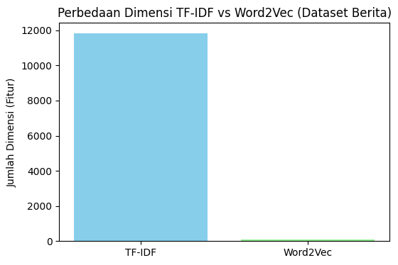

Klasifikasi dan LDA#
import pandas as pd
from google.colab import drive
drive.mount('/content/drive')
---------------------------------------------------------------------------
ModuleNotFoundError Traceback (most recent call last)
Cell In[2], line 1
----> 1 from google.colab import drive
2 drive.mount('/content/drive')
ModuleNotFoundError: No module named 'google'
Crawling PTA#
import pandas as pd
# Baca file CSV
df = pd.read_csv("/content/drive/MyDrive/PPW/pta_fatek_3halaman.csv")
# Tampilkan informasi total entri
print(f"📊 Total entri: {len(df)}")
print("✅ Data berhasil diambil dari 3 halaman tiap prodi Fakultas Teknik.\n")
# Tampilkan tabel rapih
display(df)
📊 Total entri: 135
✅ Data berhasil diambil dari 3 halaman tiap prodi Fakultas Teknik.
| penulis | judul | pembimbing_pertama | pembimbing_kedua | abstrak | prodi | |
|---|---|---|---|---|---|---|
| 0 | A.Ubaidillah S.Kom | PERANCANGAN DAN IMPLEMENTASI SISTEM DATABASE \... | Budi Setyono M.T | NaN | Sistem informasi akademik (SIAKAD) merupaka... | Teknik Informatika |
| 1 | M. Basith Ardianto, | APLIKASI KONTROL DAN MONITORING JARINGAN KOMPU... | Drs. Budi Soesilo, MT | NaN | Berjalannya koneksi jaringan komputer dengan l... | Teknik Informatika |
| 2 | Akhmad Suyandi, S.Kom | RANCANG BANGUN APLIKASI PROXY SERVER UNTUK\r\n... | Drs. Budi Soesilo, M.T | NaN | Web server adalah sebuah perangkat lunak serve... | Teknik Informatika |
| 3 | Heri Supriyanto | SISTEM PENDUKUNG KEPUTUSAN OPTIMASI PENJADWALA... | Mulaab, S.Si., M.Kom | NaN | Penjadwalan kuliah di Perguruan Tinggi me... | Teknik Informatika |
| 4 | Septian Rahman Hakim | SISTEM AUGMENTED REALITY ANIMASI BENDA BERGERA... | Arik Kurniawati, S.Kom., M.T. | NaN | Seiring perkembangan teknologi yang ada diduni... | Teknik Informatika |
| ... | ... | ... | ... | ... | ... | ... |
| 130 | DEWI AMALIYA ULFA | Pengaruh Penerapan Pembelajaran Tematik Integr... | Mujtahidin, S.Pd., M.Pd | NaN | Penelitian ini bertujuan untuk mengetahui peng... | Mekatronika |
| 131 | RIZKA AINUN JARIYAH | Pengaruh Metode Pembelajaran Bermain Peran (Ro... | Eva Ari Wahyuni, S.Pd., M.Si | NaN | Penelitian ini bertujuan untuk mengetahui peng... | Mekatronika |
| 132 | LAELA ROKHMATUL KAROMAH | PENGGUNAAN MEDIA PEMBELAJARAN KOTAK CERITA BER... | Sulaiman, S.Pd., M.Pd | NaN | Di lapangan pada umumnya siswa masih belum mam... | Mekatronika |
| 133 | Yuliana | Pengaruh Penggunaan Metode Demonstrasi Terhada... | Eva Ari Wahyuni, S.Pd., M.Si | NaN | Penelitian “Pengaruh Penggunaan Metode Demonst... | Mekatronika |
| 134 | Hendry Purnomo | KOMPARASI PRESTASI BELAJAR SISWA ANTARA MODEL ... | Badrud Tamam, S.Si., M.Pd. | NaN | Penelitian ini bertujuan untuk mengetahui, 1) ... | Mekatronika |
135 rows × 6 columns
Link keluar#
import requests
from bs4 import BeautifulSoup
import pandas as pd
def crawl_links_teknik(pages):
data = []
no = 1
for page in pages:
try:
response = requests.get(page)
response.raise_for_status()
soup = BeautifulSoup(response.content, 'html.parser')
# Ambil semua link
links = soup.find_all('a', href=True)
for link in links:
href = link['href']
teks = link.get_text(strip=True)
# Filter hanya link keluar (mulai dengan http & bukan link internal teknik.trunojoyo.ac.id)
if href.startswith("http") and "teknik.trunojoyo.ac.id" not in href:
data.append({
"No": no,
"Page": page,
"Link Keluar": href,
"Teks": teks if teks else "-"
})
no += 1
except requests.exceptions.RequestException as e:
print(f"Gagal mengakses {page}: {e}")
# Buat DataFrame
df = pd.DataFrame(data)
print("\n🔗 Daftar Link Keluar Fakultas Teknik:")
print(df.to_string(index=False))
# Simpan hasil ke CSV
df.to_csv("link_keluar_fakultas_teknik.csv", index=False, encoding="utf-8-sig")
print("\n✅ Data link keluar berhasil disimpan ke link_keluar_fakultas_teknik.csv")
return df
# Daftar halaman Fakultas Teknik yang ingin diambil link keluarnya
pages_to_crawl = [
"https://teknik.trunojoyo.ac.id/",
"https://teknik.trunojoyo.ac.id/sekilas/",
"https://teknik.trunojoyo.ac.id/berita/",
"https://teknik.trunojoyo.ac.id/prodi/",
]
# Jalankan
crawl_links_teknik(pages_to_crawl)
Gagal mengakses https://teknik.trunojoyo.ac.id/berita/: 404 Client Error: Not Found for url: https://teknik.trunojoyo.ac.id/berita/
Gagal mengakses https://teknik.trunojoyo.ac.id/prodi/: 404 Client Error: Not Found for url: https://teknik.trunojoyo.ac.id/prodi/
🔗 Daftar Link Keluar Fakultas Teknik:
No Page Link Keluar Teks
1 https://teknik.trunojoyo.ac.id/ https://fttrunojoyo.perpustakaan.co.id/ Ruang Baca Digital
2 https://teknik.trunojoyo.ac.id/ https://drive.google.com/file/d/13vrMWMRLc51yaZPqJw_wBPAgRqiH0315/view?usp=drive_link Teknik Industri
3 https://teknik.trunojoyo.ac.id/ https://drive.google.com/file/d/1p0IjDah2BT7MSg4DPSarLJhbYSVP8lOx/view?usp=drivesdk Teknik Mesin
4 https://teknik.trunojoyo.ac.id/ https://drive.google.com/file/d/1xThmCp00FGmAWC0O4-j2mjnNtQJN0sAs/view?usp=drivesdk Teknik Informatika
5 https://teknik.trunojoyo.ac.id/ https://drive.google.com/file/d/1dv65FxClUVDwuKsfdsHH4b1oUXKFOVlB/view?usp=drivesdk Sistem Informasi
6 https://teknik.trunojoyo.ac.id/ https://drive.google.com/file/d/1_pmcEum54gkq6vjk9b-iaKY-ZXBhDHn-/view?usp=drive_link Teknik Elektro
7 https://teknik.trunojoyo.ac.id/ https://drive.google.com/file/d/1Q5Tka6Bf6YmhtSeu076q0Ra59EBkgGJE/view?usp=drivesdk Teknik Mekatronika
8 https://teknik.trunojoyo.ac.id/ https://drive.google.com/file/d/1tapXtJzCC-JanwS2-voGJ9D8fWAI90wD/view Panduan Penulisan Skripsi
9 https://teknik.trunojoyo.ac.id/ https://drive.google.com/file/d/1z2C6jLcRvjd8hZldgq3x6HfO3smiUqd0/view Panduan Penulisan Laporan Kerja Praktek
10 https://teknik.trunojoyo.ac.id/ https://drive.google.com/file/d/1bnBaqS95PjhO4PFwhml6DHNYnTzwONp7/view Panduan MBKM
11 https://teknik.trunojoyo.ac.id/ https://drive.google.com/file/d/1MAx_-DkOkhIzV6Jcokh-16vitnIzWKrZ/view Panduan Sisri
12 https://teknik.trunojoyo.ac.id/ https://s.id/ydsft_utm Daftar Yudisium FT
13 https://teknik.trunojoyo.ac.id/ https://bemft.trunojoyo.ac.id/?m=1 BEM
14 https://teknik.trunojoyo.ac.id/ http://dpmft.trunojoyo.ac.id/ DPM FT
15 https://teknik.trunojoyo.ac.id/ https://himasi.trunojoyo.ac.id/?m=1 Himasi
16 https://teknik.trunojoyo.ac.id/ http://himatif.trunojoyo.ac.id/?m=1 Himatif
17 https://teknik.trunojoyo.ac.id/ http://hmti.trunojoyo.ac.id/ HMTI
18 https://teknik.trunojoyo.ac.id/ http://hmm-ft.trunojoyo.ac.id/ HMM
19 https://teknik.trunojoyo.ac.id/ http://himatro.trunojoyo.ac.id/ Himatro
20 https://teknik.trunojoyo.ac.id/ https://himameka.trunojoyo.ac.id/ Himameka
21 https://teknik.trunojoyo.ac.id/ http://kamusft.trunojoyo.ac.id/ Kamus FT
22 https://teknik.trunojoyo.ac.id/ https://tofatek.wordpress.com/ Tofatek
23 https://teknik.trunojoyo.ac.id/ http://soket.trunojoyo.ac.id/ Soket
24 https://teknik.trunojoyo.ac.id/ http://www.bluemurder.nix.id/ Blue Murder
25 https://teknik.trunojoyo.ac.id/ http://ukmfteecom.trunojoyo.ac.id/ EECOM
26 https://teknik.trunojoyo.ac.id/ https://instagram.com/ukmft_inovasi?igshid=YTQwZjQ0NmI0OA== Inovasi
27 https://teknik.trunojoyo.ac.id/ https://forms.gle/ppt8GaM68FP15XDZ7 Kuisioner Pelaksanaan Good Governance
28 https://teknik.trunojoyo.ac.id/ https://forms.gle/tiuNL46SEDSwisUx8 Survey Kepuasan Layanan FT
29 https://teknik.trunojoyo.ac.id/ https://forms.gle/KhxRqjckV4tQ9UWRA Survey Pemahaman Visi & Misi
30 https://teknik.trunojoyo.ac.id/ https://drive.google.com/file/d/1WRVnrFu8sazFU3kTxf2mzmDWjwKJA0wi/view Rencana Induk Penelitian
31 https://teknik.trunojoyo.ac.id/ https://drive.google.com/file/d/13TbpU9hyXd-1GoeNhijQ15R9CEtzj6Mf/view Rencana Induk Pengabdian
32 https://teknik.trunojoyo.ac.id/ https://ppid.trunojoyo.ac.id/ PPID
33 https://teknik.trunojoyo.ac.id/ https://fttrunojoyo.perpustakaan.co.id/ Ruang Baca Digital
34 https://teknik.trunojoyo.ac.id/ https://drive.google.com/file/d/13vrMWMRLc51yaZPqJw_wBPAgRqiH0315/view?usp=drive_link Teknik Industri
35 https://teknik.trunojoyo.ac.id/ https://drive.google.com/file/d/1p0IjDah2BT7MSg4DPSarLJhbYSVP8lOx/view?usp=drivesdk Teknik Mesin
36 https://teknik.trunojoyo.ac.id/ https://drive.google.com/file/d/1xThmCp00FGmAWC0O4-j2mjnNtQJN0sAs/view?usp=drivesdk Teknik Informatika
37 https://teknik.trunojoyo.ac.id/ https://drive.google.com/file/d/1dv65FxClUVDwuKsfdsHH4b1oUXKFOVlB/view?usp=drivesdk Sistem Informasi
38 https://teknik.trunojoyo.ac.id/ https://drive.google.com/file/d/1_pmcEum54gkq6vjk9b-iaKY-ZXBhDHn-/view?usp=drive_link Teknik Elektro
39 https://teknik.trunojoyo.ac.id/ https://drive.google.com/file/d/1Q5Tka6Bf6YmhtSeu076q0Ra59EBkgGJE/view?usp=drivesdk Teknik Mekatronika
40 https://teknik.trunojoyo.ac.id/ https://drive.google.com/file/d/1tapXtJzCC-JanwS2-voGJ9D8fWAI90wD/view Panduan Penulisan Skripsi
41 https://teknik.trunojoyo.ac.id/ https://drive.google.com/file/d/1z2C6jLcRvjd8hZldgq3x6HfO3smiUqd0/view Panduan Penulisan Laporan Kerja Praktek
42 https://teknik.trunojoyo.ac.id/ https://drive.google.com/file/d/1bnBaqS95PjhO4PFwhml6DHNYnTzwONp7/view Panduan MBKM
43 https://teknik.trunojoyo.ac.id/ https://drive.google.com/file/d/1MAx_-DkOkhIzV6Jcokh-16vitnIzWKrZ/view Panduan Sisri
44 https://teknik.trunojoyo.ac.id/ https://s.id/ydsft_utm Daftar Yudisium FT
45 https://teknik.trunojoyo.ac.id/ https://bemft.trunojoyo.ac.id/?m=1 BEM
46 https://teknik.trunojoyo.ac.id/ http://dpmft.trunojoyo.ac.id/ DPM FT
47 https://teknik.trunojoyo.ac.id/ https://himasi.trunojoyo.ac.id/?m=1 Himasi
48 https://teknik.trunojoyo.ac.id/ http://himatif.trunojoyo.ac.id/?m=1 Himatif
49 https://teknik.trunojoyo.ac.id/ http://hmti.trunojoyo.ac.id/ HMTI
50 https://teknik.trunojoyo.ac.id/ http://hmm-ft.trunojoyo.ac.id/ HMM
51 https://teknik.trunojoyo.ac.id/ http://himatro.trunojoyo.ac.id/ Himatro
52 https://teknik.trunojoyo.ac.id/ https://himameka.trunojoyo.ac.id/ Himameka
53 https://teknik.trunojoyo.ac.id/ http://kamusft.trunojoyo.ac.id/ Kamus FT
54 https://teknik.trunojoyo.ac.id/ https://tofatek.wordpress.com/ Tofatek
55 https://teknik.trunojoyo.ac.id/ http://soket.trunojoyo.ac.id/ Soket
56 https://teknik.trunojoyo.ac.id/ http://www.bluemurder.nix.id/ Blue Murder
57 https://teknik.trunojoyo.ac.id/ http://ukmfteecom.trunojoyo.ac.id/ EECOM
58 https://teknik.trunojoyo.ac.id/ https://instagram.com/ukmft_inovasi?igshid=YTQwZjQ0NmI0OA== Inovasi
59 https://teknik.trunojoyo.ac.id/ https://forms.gle/ppt8GaM68FP15XDZ7 Kuisioner Pelaksanaan Good Governance
60 https://teknik.trunojoyo.ac.id/ https://forms.gle/tiuNL46SEDSwisUx8 Survey Kepuasan Layanan FT
61 https://teknik.trunojoyo.ac.id/ https://forms.gle/KhxRqjckV4tQ9UWRA Survey Pemahaman Visi & Misi
62 https://teknik.trunojoyo.ac.id/ https://drive.google.com/file/d/1WRVnrFu8sazFU3kTxf2mzmDWjwKJA0wi/view Rencana Induk Penelitian
63 https://teknik.trunojoyo.ac.id/ https://drive.google.com/file/d/13TbpU9hyXd-1GoeNhijQ15R9CEtzj6Mf/view Rencana Induk Pengabdian
64 https://teknik.trunojoyo.ac.id/ https://ppid.trunojoyo.ac.id/ PPID
65 https://teknik.trunojoyo.ac.id/ https://www.youtube.com/@FAKULTASTEKNIKUTM -
66 https://teknik.trunojoyo.ac.id/ https://www.instagram.com/ftutm.official -
67 https://teknik.trunojoyo.ac.id/ https://fttrunojoyo.perpustakaan.co.id/ Ruang Baca Digital
68 https://teknik.trunojoyo.ac.id/ https://forms.gle/KhxRqjckV4tQ9UWRA Survey Pemahaman Visi Misi
69 https://teknik.trunojoyo.ac.id/sekilas/ https://fttrunojoyo.perpustakaan.co.id/ Ruang Baca Digital
70 https://teknik.trunojoyo.ac.id/sekilas/ https://drive.google.com/file/d/13vrMWMRLc51yaZPqJw_wBPAgRqiH0315/view?usp=drive_link Teknik Industri
71 https://teknik.trunojoyo.ac.id/sekilas/ https://drive.google.com/file/d/1p0IjDah2BT7MSg4DPSarLJhbYSVP8lOx/view?usp=drivesdk Teknik Mesin
72 https://teknik.trunojoyo.ac.id/sekilas/ https://drive.google.com/file/d/1xThmCp00FGmAWC0O4-j2mjnNtQJN0sAs/view?usp=drivesdk Teknik Informatika
73 https://teknik.trunojoyo.ac.id/sekilas/ https://drive.google.com/file/d/1dv65FxClUVDwuKsfdsHH4b1oUXKFOVlB/view?usp=drivesdk Sistem Informasi
74 https://teknik.trunojoyo.ac.id/sekilas/ https://drive.google.com/file/d/1_pmcEum54gkq6vjk9b-iaKY-ZXBhDHn-/view?usp=drive_link Teknik Elektro
75 https://teknik.trunojoyo.ac.id/sekilas/ https://drive.google.com/file/d/1Q5Tka6Bf6YmhtSeu076q0Ra59EBkgGJE/view?usp=drivesdk Teknik Mekatronika
76 https://teknik.trunojoyo.ac.id/sekilas/ https://drive.google.com/file/d/1tapXtJzCC-JanwS2-voGJ9D8fWAI90wD/view Panduan Penulisan Skripsi
77 https://teknik.trunojoyo.ac.id/sekilas/ https://drive.google.com/file/d/1z2C6jLcRvjd8hZldgq3x6HfO3smiUqd0/view Panduan Penulisan Laporan Kerja Praktek
78 https://teknik.trunojoyo.ac.id/sekilas/ https://drive.google.com/file/d/1bnBaqS95PjhO4PFwhml6DHNYnTzwONp7/view Panduan MBKM
79 https://teknik.trunojoyo.ac.id/sekilas/ https://drive.google.com/file/d/1MAx_-DkOkhIzV6Jcokh-16vitnIzWKrZ/view Panduan Sisri
80 https://teknik.trunojoyo.ac.id/sekilas/ https://s.id/ydsft_utm Daftar Yudisium FT
81 https://teknik.trunojoyo.ac.id/sekilas/ https://bemft.trunojoyo.ac.id/?m=1 BEM
82 https://teknik.trunojoyo.ac.id/sekilas/ http://dpmft.trunojoyo.ac.id/ DPM FT
83 https://teknik.trunojoyo.ac.id/sekilas/ https://himasi.trunojoyo.ac.id/?m=1 Himasi
84 https://teknik.trunojoyo.ac.id/sekilas/ http://himatif.trunojoyo.ac.id/?m=1 Himatif
85 https://teknik.trunojoyo.ac.id/sekilas/ http://hmti.trunojoyo.ac.id/ HMTI
86 https://teknik.trunojoyo.ac.id/sekilas/ http://hmm-ft.trunojoyo.ac.id/ HMM
87 https://teknik.trunojoyo.ac.id/sekilas/ http://himatro.trunojoyo.ac.id/ Himatro
88 https://teknik.trunojoyo.ac.id/sekilas/ https://himameka.trunojoyo.ac.id/ Himameka
89 https://teknik.trunojoyo.ac.id/sekilas/ http://kamusft.trunojoyo.ac.id/ Kamus FT
90 https://teknik.trunojoyo.ac.id/sekilas/ https://tofatek.wordpress.com/ Tofatek
91 https://teknik.trunojoyo.ac.id/sekilas/ http://soket.trunojoyo.ac.id/ Soket
92 https://teknik.trunojoyo.ac.id/sekilas/ http://www.bluemurder.nix.id/ Blue Murder
93 https://teknik.trunojoyo.ac.id/sekilas/ http://ukmfteecom.trunojoyo.ac.id/ EECOM
94 https://teknik.trunojoyo.ac.id/sekilas/ https://instagram.com/ukmft_inovasi?igshid=YTQwZjQ0NmI0OA== Inovasi
95 https://teknik.trunojoyo.ac.id/sekilas/ https://forms.gle/ppt8GaM68FP15XDZ7 Kuisioner Pelaksanaan Good Governance
96 https://teknik.trunojoyo.ac.id/sekilas/ https://forms.gle/tiuNL46SEDSwisUx8 Survey Kepuasan Layanan FT
97 https://teknik.trunojoyo.ac.id/sekilas/ https://forms.gle/KhxRqjckV4tQ9UWRA Survey Pemahaman Visi & Misi
98 https://teknik.trunojoyo.ac.id/sekilas/ https://drive.google.com/file/d/1WRVnrFu8sazFU3kTxf2mzmDWjwKJA0wi/view Rencana Induk Penelitian
99 https://teknik.trunojoyo.ac.id/sekilas/ https://drive.google.com/file/d/13TbpU9hyXd-1GoeNhijQ15R9CEtzj6Mf/view Rencana Induk Pengabdian
100 https://teknik.trunojoyo.ac.id/sekilas/ https://ppid.trunojoyo.ac.id/ PPID
101 https://teknik.trunojoyo.ac.id/sekilas/ https://fttrunojoyo.perpustakaan.co.id/ Ruang Baca Digital
102 https://teknik.trunojoyo.ac.id/sekilas/ https://drive.google.com/file/d/13vrMWMRLc51yaZPqJw_wBPAgRqiH0315/view?usp=drive_link Teknik Industri
103 https://teknik.trunojoyo.ac.id/sekilas/ https://drive.google.com/file/d/1p0IjDah2BT7MSg4DPSarLJhbYSVP8lOx/view?usp=drivesdk Teknik Mesin
104 https://teknik.trunojoyo.ac.id/sekilas/ https://drive.google.com/file/d/1xThmCp00FGmAWC0O4-j2mjnNtQJN0sAs/view?usp=drivesdk Teknik Informatika
105 https://teknik.trunojoyo.ac.id/sekilas/ https://drive.google.com/file/d/1dv65FxClUVDwuKsfdsHH4b1oUXKFOVlB/view?usp=drivesdk Sistem Informasi
106 https://teknik.trunojoyo.ac.id/sekilas/ https://drive.google.com/file/d/1_pmcEum54gkq6vjk9b-iaKY-ZXBhDHn-/view?usp=drive_link Teknik Elektro
107 https://teknik.trunojoyo.ac.id/sekilas/ https://drive.google.com/file/d/1Q5Tka6Bf6YmhtSeu076q0Ra59EBkgGJE/view?usp=drivesdk Teknik Mekatronika
108 https://teknik.trunojoyo.ac.id/sekilas/ https://drive.google.com/file/d/1tapXtJzCC-JanwS2-voGJ9D8fWAI90wD/view Panduan Penulisan Skripsi
109 https://teknik.trunojoyo.ac.id/sekilas/ https://drive.google.com/file/d/1z2C6jLcRvjd8hZldgq3x6HfO3smiUqd0/view Panduan Penulisan Laporan Kerja Praktek
110 https://teknik.trunojoyo.ac.id/sekilas/ https://drive.google.com/file/d/1bnBaqS95PjhO4PFwhml6DHNYnTzwONp7/view Panduan MBKM
111 https://teknik.trunojoyo.ac.id/sekilas/ https://drive.google.com/file/d/1MAx_-DkOkhIzV6Jcokh-16vitnIzWKrZ/view Panduan Sisri
112 https://teknik.trunojoyo.ac.id/sekilas/ https://s.id/ydsft_utm Daftar Yudisium FT
113 https://teknik.trunojoyo.ac.id/sekilas/ https://bemft.trunojoyo.ac.id/?m=1 BEM
114 https://teknik.trunojoyo.ac.id/sekilas/ http://dpmft.trunojoyo.ac.id/ DPM FT
115 https://teknik.trunojoyo.ac.id/sekilas/ https://himasi.trunojoyo.ac.id/?m=1 Himasi
116 https://teknik.trunojoyo.ac.id/sekilas/ http://himatif.trunojoyo.ac.id/?m=1 Himatif
117 https://teknik.trunojoyo.ac.id/sekilas/ http://hmti.trunojoyo.ac.id/ HMTI
118 https://teknik.trunojoyo.ac.id/sekilas/ http://hmm-ft.trunojoyo.ac.id/ HMM
119 https://teknik.trunojoyo.ac.id/sekilas/ http://himatro.trunojoyo.ac.id/ Himatro
120 https://teknik.trunojoyo.ac.id/sekilas/ https://himameka.trunojoyo.ac.id/ Himameka
121 https://teknik.trunojoyo.ac.id/sekilas/ http://kamusft.trunojoyo.ac.id/ Kamus FT
122 https://teknik.trunojoyo.ac.id/sekilas/ https://tofatek.wordpress.com/ Tofatek
123 https://teknik.trunojoyo.ac.id/sekilas/ http://soket.trunojoyo.ac.id/ Soket
124 https://teknik.trunojoyo.ac.id/sekilas/ http://www.bluemurder.nix.id/ Blue Murder
125 https://teknik.trunojoyo.ac.id/sekilas/ http://ukmfteecom.trunojoyo.ac.id/ EECOM
126 https://teknik.trunojoyo.ac.id/sekilas/ https://instagram.com/ukmft_inovasi?igshid=YTQwZjQ0NmI0OA== Inovasi
127 https://teknik.trunojoyo.ac.id/sekilas/ https://forms.gle/ppt8GaM68FP15XDZ7 Kuisioner Pelaksanaan Good Governance
128 https://teknik.trunojoyo.ac.id/sekilas/ https://forms.gle/tiuNL46SEDSwisUx8 Survey Kepuasan Layanan FT
129 https://teknik.trunojoyo.ac.id/sekilas/ https://forms.gle/KhxRqjckV4tQ9UWRA Survey Pemahaman Visi & Misi
130 https://teknik.trunojoyo.ac.id/sekilas/ https://drive.google.com/file/d/1WRVnrFu8sazFU3kTxf2mzmDWjwKJA0wi/view Rencana Induk Penelitian
131 https://teknik.trunojoyo.ac.id/sekilas/ https://drive.google.com/file/d/13TbpU9hyXd-1GoeNhijQ15R9CEtzj6Mf/view Rencana Induk Pengabdian
132 https://teknik.trunojoyo.ac.id/sekilas/ https://ppid.trunojoyo.ac.id/ PPID
✅ Data link keluar berhasil disimpan ke link_keluar_fakultas_teknik.csv
| No | Page | Link Keluar | Teks | |
|---|---|---|---|---|
| 0 | 1 | https://teknik.trunojoyo.ac.id/ | https://fttrunojoyo.perpustakaan.co.id/ | Ruang Baca Digital |
| 1 | 2 | https://teknik.trunojoyo.ac.id/ | https://drive.google.com/file/d/13vrMWMRLc51ya... | Teknik Industri |
| 2 | 3 | https://teknik.trunojoyo.ac.id/ | https://drive.google.com/file/d/1p0IjDah2BT7MS... | Teknik Mesin |
| 3 | 4 | https://teknik.trunojoyo.ac.id/ | https://drive.google.com/file/d/1xThmCp00FGmAW... | Teknik Informatika |
| 4 | 5 | https://teknik.trunojoyo.ac.id/ | https://drive.google.com/file/d/1dv65FxClUVDwu... | Sistem Informasi |
| ... | ... | ... | ... | ... |
| 127 | 128 | https://teknik.trunojoyo.ac.id/sekilas/ | https://forms.gle/tiuNL46SEDSwisUx8 | Survey Kepuasan Layanan FT |
| 128 | 129 | https://teknik.trunojoyo.ac.id/sekilas/ | https://forms.gle/KhxRqjckV4tQ9UWRA | Survey Pemahaman Visi & Misi |
| 129 | 130 | https://teknik.trunojoyo.ac.id/sekilas/ | https://drive.google.com/file/d/1WRVnrFu8sazFU... | Rencana Induk Penelitian |
| 130 | 131 | https://teknik.trunojoyo.ac.id/sekilas/ | https://drive.google.com/file/d/13TbpU9hyXd-1G... | Rencana Induk Pengabdian |
| 131 | 132 | https://teknik.trunojoyo.ac.id/sekilas/ | https://ppid.trunojoyo.ac.id/ | PPID |
132 rows × 4 columns
Penghapusan Kata Umum#
import pandas as pd
import nltk
from nltk.corpus import stopwords
import os
# --- 1. Download stopwords bahasa Indonesia (kalau belum) ---
nltk.download('stopwords')
# --- 2. Tentukan path file ---
file_path = "/content/drive/MyDrive/PPW/pta_fatek_3halaman.csv" # sesuaikan jika file ada di folder lain
# --- 3. Cek apakah file tersedia ---
if not os.path.exists(file_path):
print(f"❌ File '{file_path}' tidak ditemukan.")
print("Pastikan file sudah diupload atau pathnya benar.")
else:
# --- 4. Baca dataset ---
df = pd.read_csv(file_path, encoding='utf-8')
print(f"✅ File ditemukan! Total entri: {len(df)}")
# --- 5. Ambil kolom penting ---
if all(col in df.columns for col in ['judul', 'prodi', 'abstrak']):
df = df[['judul', 'prodi', 'abstrak']]
else:
print("⚠️ Kolom 'judul', 'prodi', atau 'abstrak' tidak ditemukan dalam file CSV.")
# --- 6. Ambil stopwords bahasa Indonesia ---
stop_words = set(stopwords.words('indonesian'))
# --- 7. Fungsi untuk hapus stopwords ---
def remove_stopwords(text):
if pd.isna(text):
return ""
words = text.lower().split()
filtered = [w for w in words if w not in stop_words]
return " ".join(filtered)
# --- 8. Terapkan ke kolom abstrak ---
df['abstrak_no_stopwords'] = df['abstrak'].astype(str).apply(remove_stopwords)
# --- 9. Simpan hasil ke file baru ---
output_file = "pta_fatek_no_stopwords.csv"
df.to_csv(output_file, index=False, encoding="utf-8-sig")
print(f"📁 Stopword removal selesai. Hasil disimpan ke: {output_file}")
# --- 10. Tampilkan contoh hasil ---
print(df[['abstrak', 'abstrak_no_stopwords']].head(10))
✅ File ditemukan! Total entri: 135
📁 Stopword removal selesai. Hasil disimpan ke: pta_fatek_no_stopwords.csv
abstrak \
0 Sistem informasi akademik (SIAKAD) merupaka...
1 Berjalannya koneksi jaringan komputer dengan l...
2 Web server adalah sebuah perangkat lunak serve...
3 Penjadwalan kuliah di Perguruan Tinggi me...
4 Seiring perkembangan teknologi yang ada diduni...
5 Gerak pekerja ada pada game yang memiliki genr...
6 Perkembangan game yang semakin pesat, memberik...
7 Sistem pengenalan wajah adalah suatu sistem un...
8 Teknologi mobile game beroperating system open...
9 Kantor Badan Kepegawaian kota Bangkalan adalah...
abstrak_no_stopwords
0 sistem informasi akademik (siakad) sistem info...
1 berjalannya koneksi jaringan komputer lancar g...
2 web server perangkat lunak server berfungsi me...
3 penjadwalan kuliah perguruan kompleks. permasa...
4 seiring perkembangan teknologi didunia, muncul...
5 gerak pekerja game memiliki genre rts (real-ti...
6 perkembangan game pesat, alternative peminatny...
7 sistem pengenalan wajah sistem mengenali ident...
8 teknologi mobile game beroperating system open...
9 kantor badan kepegawaian kota bangkalan instan...
[nltk_data] Downloading package stopwords to /root/nltk_data...
[nltk_data] Unzipping corpora/stopwords.zip.
Menhilangkan Simbol Tanda Baca#
import pandas as pd
import nltk
from nltk.corpus import stopwords
import os
import re # <--- penting untuk hapus tanda baca
# --- 1. Download stopwords bahasa Indonesia (kalau belum) ---
nltk.download('stopwords')
# --- 2. Tentukan path file ---
file_path = "/content/drive/MyDrive/PPW/pta_fatek_3halaman.csv" # sesuaikan jika file ada di folder lain
# --- 3. Cek apakah file tersedia ---
if not os.path.exists(file_path):
print(f"❌ File '{file_path}' tidak ditemukan.")
else:
# --- 4. Baca dataset ---
df = pd.read_csv(file_path, encoding='utf-8')
print(f"✅ File ditemukan! Total entri: {len(df)}")
# --- 5. Pastikan kolom tersedia ---
if all(col in df.columns for col in ['judul', 'prodi', 'abstrak']):
df = df[['judul', 'prodi', 'abstrak']]
else:
print("⚠️ Kolom 'judul', 'prodi', atau 'abstrak' tidak ditemukan dalam file CSV.")
# --- 6. Ambil stopwords bahasa Indonesia ---
stop_words = set(stopwords.words('indonesian'))
# --- 7. Fungsi hapus tanda baca ---
def remove_punctuation(text):
if pd.isna(text):
return ""
# Hapus semua karakter non huruf dan spasi
text = re.sub(r'[^a-zA-Z0-9\s]', '', text)
return text
# --- 8. Fungsi hapus stopwords ---
def remove_stopwords(text):
words = text.lower().split()
filtered = [w for w in words if w not in stop_words]
return " ".join(filtered)
# --- 9. Bersihkan tanda baca dulu ---
df['abstrak_clean'] = df['abstrak'].astype(str).apply(remove_punctuation)
# --- 10. Lalu hapus stopwords ---
df['abstrak_no_stopwords'] = df['abstrak_clean'].apply(remove_stopwords)
# --- 11. Simpan hasil ---
output_file = "pta_fatek_clean.csv"
df.to_csv(output_file, index=False, encoding="utf-8-sig")
print(f"🧹 Pembersihan selesai! File disimpan sebagai: {output_file}")
# --- 12. Tampilkan contoh hasil ---
print(df[['abstrak', 'abstrak_clean', 'abstrak_no_stopwords']].head(10))
✅ File ditemukan! Total entri: 135
🧹 Pembersihan selesai! File disimpan sebagai: pta_fatek_clean.csv
abstrak \
0 Sistem informasi akademik (SIAKAD) merupaka...
1 Berjalannya koneksi jaringan komputer dengan l...
2 Web server adalah sebuah perangkat lunak serve...
3 Penjadwalan kuliah di Perguruan Tinggi me...
4 Seiring perkembangan teknologi yang ada diduni...
5 Gerak pekerja ada pada game yang memiliki genr...
6 Perkembangan game yang semakin pesat, memberik...
7 Sistem pengenalan wajah adalah suatu sistem un...
8 Teknologi mobile game beroperating system open...
9 Kantor Badan Kepegawaian kota Bangkalan adalah...
abstrak_clean \
0 Sistem informasi akademik SIAKAD merupakan ...
1 Berjalannya koneksi jaringan komputer dengan l...
2 Web server adalah sebuah perangkat lunak serve...
3 Penjadwalan kuliah di Perguruan Tinggi me...
4 Seiring perkembangan teknologi yang ada diduni...
5 Gerak pekerja ada pada game yang memiliki genr...
6 Perkembangan game yang semakin pesat memberika...
7 Sistem pengenalan wajah adalah suatu sistem un...
8 Teknologi mobile game beroperating system open...
9 Kantor Badan Kepegawaian kota Bangkalan adalah...
abstrak_no_stopwords
0 sistem informasi akademik siakad sistem inform...
1 berjalannya koneksi jaringan komputer lancar g...
2 web server perangkat lunak server berfungsi me...
3 penjadwalan kuliah perguruan kompleks permasal...
4 seiring perkembangan teknologi didunia muncul ...
5 gerak pekerja game memiliki genre rts realtime...
6 perkembangan game pesat alternative peminatnya...
7 sistem pengenalan wajah sistem mengenali ident...
8 teknologi mobile game beroperating system open...
9 kantor badan kepegawaian kota bangkalan instan...
[nltk_data] Downloading package stopwords to /root/nltk_data...
[nltk_data] Package stopwords is already up-to-date!
Cek Ejaan Pembakuan Kata#
!pip install sastrawi pyspellchecker
Collecting sastrawi
Downloading Sastrawi-1.0.1-py2.py3-none-any.whl.metadata (909 bytes)
Collecting pyspellchecker
Downloading pyspellchecker-0.8.3-py3-none-any.whl.metadata (9.5 kB)
Downloading Sastrawi-1.0.1-py2.py3-none-any.whl (209 kB)
?25l ━━━━━━━━━━━━━━━━━━━━━━━━━━━━━━━━━━━━━━━━ 0.0/209.7 kB ? eta -:--:--
━━━━━━━━━━━━━━━━━━━━━━━━━━━━━━━━━━━━━━━━ 209.7/209.7 kB 13.6 MB/s eta 0:00:00
?25hDownloading pyspellchecker-0.8.3-py3-none-any.whl (7.2 MB)
━━━━━━━━━━━━━━━━━━━━━━━━━━━━━━━━━━━━━━━━ 7.2/7.2 MB 101.3 MB/s eta 0:00:00
?25hInstalling collected packages: sastrawi, pyspellchecker
Successfully installed pyspellchecker-0.8.3 sastrawi-1.0.1
tokenisasi#
# 1. Install NLTK (kalau belum) - Already done
# !pip install nltk
# 2. Import
import pandas as pd
# import nltk # No longer needed for simple split tokenization
# nltk.download('punkt') # download tokenizer - No longer needed
# from nltk.tokenize import word_tokenize # No longer needed
# 3. Baca file hasil stemming & lemma (or use the existing df)
# Assuming the DataFrame 'df' from the previous steps is available and contains 'abstrak_lematisasi'
# If you are running this cell independently, load the file:
try:
file_path = "/content/drive/MyDrive/PPW/pta_fatek_stemming_lemma.csv"
df = pd.read_csv(file_path, encoding='utf-8')
print(f"✅ File loaded from {file_path}")
except FileNotFoundError:
print(f"❌ File not found at {file_path}. Please ensure the previous steps were run or load the correct file.")
# If file not found, try to use the existing df if available
if 'df' in globals() and 'abstrak_lematisasi' in df.columns:
print("✅ Using existing DataFrame from previous steps.")
else:
print("❌ No suitable DataFrame found. Cannot proceed.")
df = None # Set df to None to prevent further errors
if df is not None and 'abstrak_lematisasi' in df.columns:
# 4. Tokenisasi pakai split()
# def tokenize_text(text): # Original NLTK function
# return word_tokenize(str(text))
# Using split() for tokenization
df['token'] = df['abstrak_lematisasi'].astype(str).apply(lambda x: x.split())
# 5. Simpan hasil ke file baru
output_path = "/content/drive/MyDrive/PPW/pta_fatek_tokenisasi.csv"
df.to_csv(output_path, index=False, encoding='utf-8-sig')
print(f"✅ Tokenisasi selesai. Hasil disimpan ke: {output_path}")
# 6. Lihat hasil contoh
print(df[['abstrak_lematisasi', 'token']].head())
else:
print("Tokenization could not be performed due to missing data.")
✅ File loaded from /content/drive/MyDrive/PPW/pta_fatek_stemming_lemma.csv
✅ Tokenisasi selesai. Hasil disimpan ke: /content/drive/MyDrive/PPW/pta_fatek_tokenisasi.csv
abstrak_lematisasi \
0 sistem informasi akademik siakad rupa sistem i...
1 jalan koneksi jaring komputer dengan lancar da...
2 web server adalah buah perangkat lunak server ...
3 jadwal kuliah di guru tinggi rupa masalah yang...
4 iring kembang teknologi yang ada dunia muncul ...
token
0 [sistem, informasi, akademik, siakad, rupa, si...
1 [jalan, koneksi, jaring, komputer, dengan, lan...
2 [web, server, adalah, buah, perangkat, lunak, ...
3 [jadwal, kuliah, di, guru, tinggi, rupa, masal...
4 [iring, kembang, teknologi, yang, ada, dunia, ...
crawling berita#
# Path file kedua
import pandas as pd
# Baca file CSV
df = pd.read_csv("/content/drive/MyDrive/PPW/CrawlBerita_Kesehatan-Pariwisata.csv")
# Tampilkan informasi total entri
print(f"📊 Total entri: {len(df)}")
print("✅ Data berhasil diambil")
# Tampilkan tabel rapih
display(df)
📊 Total entri: 300
✅ Data berhasil diambil
| id_berita | judul_berita | isi_berita | kategori_berita | |
|---|---|---|---|---|
| 0 | 1 | Pasien Mayapada Hospital Kini Bisa Nikmati Ant... | Jakarta - Mayapada Healthcare dan BMW Astra me... | Kesehatan |
| 1 | 2 | Cucu Mahfud MD Keracunan MBG di Jogja, Kepala ... | Jakarta - Kepala Badan Gizi Nasional (BGN) Dad... | Kesehatan |
| 2 | 3 | Tuai Polemik, Ini Alasan BGN Masih Bolehkan Ul... | Jakarta - Badan Gizi Nasional (BGN) masih memp... | Kesehatan |
| 3 | 4 | Kepala BGN Sebut Bolehkan UPF di Menu MBG, Con... | Jakarta - Badan Gizi Nasional (BGN) ramai dikr... | Kesehatan |
| 4 | 5 | Kepala BPOM RI Tekankan Pentingnya Lindungi Ra... | Jakarta - Kepala Badan Pengawas Obat dan Makan... | Kesehatan |
| ... | ... | ... | ... | ... |
| 295 | 296 | Warga Bali Keluhkan Tembok GWK Halangi Akses, ... | Badung - Pembangunan tembok di area Garuda Wis... | Pariwisata |
| 296 | 297 | Topan Ragasa Berlalu, Makau Buka Kembali Kasin... | Makau - Makau menjadi salah satu wilayah yang ... | Pariwisata |
| 297 | 298 | Pariwisata Tak Melulu soal Liburan, Industri H... | Jakarta - Pariwisata berkelanjutan menjadi waj... | Pariwisata |
| 298 | 299 | Ngeri, Penumpang Digigit Tikus di Ruang Tunggu... | Jakarta - Sebuah insiden menjijikkan terjadi d... | Pariwisata |
| 299 | 300 | Topan Ragasa Hantam China, 2 Juta Orang Dievak... | Jakarta - Topan super Ragasa, siklon tropis te... | Pariwisata |
300 rows × 4 columns
penghapusan kata umum#
import pandas as pd
import nltk
from nltk.corpus import stopwords
import os
# --- 1. Download stopwords bahasa Indonesia (kalau belum) ---
nltk.download('stopwords')
# --- 2. Tentukan path file ---
file_path = "/content/drive/MyDrive/PPW/CrawlBerita_Kesehatan-Pariwisata.csv" # sesuaikan jika file ada di folder lain
# --- 3. Cek apakah file tersedia ---
if not os.path.exists(file_path):
print(f"❌ File '{file_path}' tidak ditemukan.")
print("Pastikan file sudah diupload atau pathnya benar.")
else:
# --- 4. Baca dataset ---
df = pd.read_csv(file_path, encoding='utf-8')
print(f"✅ File ditemukan! Total entri: {len(df)}")
# --- 5. Ambil kolom penting (sesuaikan dengan nama kolom di file berita) ---
if all(col in df.columns for col in ['judul_berita', 'kategori_berita', 'isi_berita']):
df_berita = df[['judul_berita', 'kategori_berita', 'isi_berita']].copy() # Create a copy to avoid SettingWithCopyWarning
else:
print("⚠️ Kolom 'judul_berita', 'kategori_berita', atau 'isi_berita' tidak ditemukan dalam file CSV.")
df_berita = None # Set df_berita to None if columns are not found
if df_berita is not None:
# --- 6. Ambil stopwords bahasa Indonesia ---
stop_words = set(stopwords.words('indonesian'))
# --- 7. Fungsi untuk hapus stopwords ---
def remove_stopwords(text):
if pd.isna(text):
return ""
words = text.lower().split()
filtered = [w for w in words if w not in stop_words]
return " ".join(filtered)
# --- 8. Terapkan ke kolom isi_berita ---
df_berita['isi_berita_no_stopwords'] = df_berita['isi_berita'].astype(str).apply(remove_stopwords)
# --- 9. Simpan hasil ke file baru ---
output_file = "berita_no_stopwords.csv"
df_berita.to_csv(output_file, index=False, encoding="utf-8-sig")
print(f"📁 Stopword removal selesai. Hasil disimpan ke: {output_file}")
# --- 10. Tampilkan contoh hasil ---
print(df_berita[['isi_berita', 'isi_berita_no_stopwords']].head(10))
✅ File ditemukan! Total entri: 300
📁 Stopword removal selesai. Hasil disimpan ke: berita_no_stopwords.csv
isi_berita \
0 Jakarta - Mayapada Healthcare dan BMW Astra me...
1 Jakarta - Kepala Badan Gizi Nasional (BGN) Dad...
2 Jakarta - Badan Gizi Nasional (BGN) masih memp...
3 Jakarta - Badan Gizi Nasional (BGN) ramai dikr...
4 Jakarta - Kepala Badan Pengawas Obat dan Makan...
5 Jakarta - Kasus kontaminasi radiasi Cesium-137...
6 Jakarta - Hari ini, Rabu (1 Oktober 2025) DPR ...
7 Jakarta - Anggota DPR RI Komisi IX, Edy Wuryan...
8 Jakarta - Regulator federal di Amerika Serikat...
9 Daftar Isi Apa Itu Operasi Bariatrik? Jenis-je...
isi_berita_no_stopwords
0 jakarta - mayapada healthcare bmw astra menjal...
1 jakarta - kepala badan gizi nasional (bgn) dad...
2 jakarta - badan gizi nasional (bgn) memperbole...
3 jakarta - badan gizi nasional (bgn) ramai dikr...
4 jakarta - kepala badan pengawas obat makanan (...
5 jakarta - kontaminasi radiasi cesium-137 (cs-1...
6 jakarta - ini, rabu (1 oktober 2025) dpr meman...
7 jakarta - anggota dpr ri komisi ix, edy wuryan...
8 jakarta - regulator federal amerika serikat me...
9 daftar isi operasi bariatrik? jenis-jenis oper...
[nltk_data] Downloading package stopwords to /root/nltk_data...
[nltk_data] Package stopwords is already up-to-date!
menghilangkan simbol tanda baca#
import pandas as pd
import nltk
from nltk.corpus import stopwords
import os
import re # <--- penting untuk hapus tanda baca
# --- 1. Download stopwords bahasa Indonesia (kalau belum) ---
nltk.download('stopwords')
# --- 2. Tentukan path file ---
file_path = "/content/drive/MyDrive/PPW/CrawlBerita_Kesehatan-Pariwisata.csv" # sesuaikan jika file ada di folder lain
# --- 3. Cek apakah file tersedia ---
if not os.path.exists(file_path):
print(f"❌ File '{file_path}' tidak ditemukan.")
else:
# --- 4. Baca dataset ---
df_berita = pd.read_csv(file_path, encoding='utf-8') # Use a different variable name to avoid conflict
print(f"✅ File ditemukan! Total entri: {len(df_berita)}")
# --- 5. Pastikan kolom tersedia (gunakan nama kolom dari file berita) ---
if all(col in df_berita.columns for col in ['judul_berita', 'kategori_berita', 'isi_berita']):
# Select the relevant columns and create a copy to avoid SettingWithCopyWarning
df_berita = df_berita[['judul_berita', 'kategori_berita', 'isi_berita']].copy()
else:
print("⚠️ Kolom 'judul_berita', 'kategori_berita', atau 'isi_berita' tidak ditemukan dalam file CSV.")
df_berita = None # Set to None if columns are not found
if df_berita is not None:
# --- 6. Ambil stopwords bahasa Indonesia ---
stop_words = set(stopwords.words('indonesian'))
# --- 7. Fungsi hapus tanda baca ---
def remove_punctuation(text):
if pd.isna(text):
return ""
# Hapus semua karakter non huruf dan spasi
text = re.sub(r'[^a-zA-Z0-9\s]', '', text)
return text
# --- 8. Fungsi hapus stopwords ---
def remove_stopwords(text):
words = text.lower().split()
filtered = [w for w in words if w not in stop_words]
return " ".join(filtered)
# --- 9. Bersihkan tanda baca dulu dari kolom 'isi_berita' ---
df_berita['isi_berita_clean'] = df_berita['isi_berita'].astype(str).apply(remove_punctuation)
# --- 10. Lalu hapus stopwords dari kolom 'isi_berita_clean' ---
df_berita['isi_berita_no_stopwords'] = df_berita['isi_berita_clean'].apply(remove_stopwords)
# --- 11. Simpan hasil ---
output_file = "berita_clean.csv"
df_berita.to_csv(output_file, index=False, encoding="utf-8-sig")
print(f"🧹 Pembersihan selesai! File disimpan sebagai: {output_file}")
# --- 12. Tampilkan contoh hasil ---
print(df_berita[['isi_berita', 'isi_berita_clean', 'isi_berita_no_stopwords']].head(10))
✅ File ditemukan! Total entri: 300
🧹 Pembersihan selesai! File disimpan sebagai: berita_clean.csv
isi_berita \
0 Jakarta - Mayapada Healthcare dan BMW Astra me...
1 Jakarta - Kepala Badan Gizi Nasional (BGN) Dad...
2 Jakarta - Badan Gizi Nasional (BGN) masih memp...
3 Jakarta - Badan Gizi Nasional (BGN) ramai dikr...
4 Jakarta - Kepala Badan Pengawas Obat dan Makan...
5 Jakarta - Kasus kontaminasi radiasi Cesium-137...
6 Jakarta - Hari ini, Rabu (1 Oktober 2025) DPR ...
7 Jakarta - Anggota DPR RI Komisi IX, Edy Wuryan...
8 Jakarta - Regulator federal di Amerika Serikat...
9 Daftar Isi Apa Itu Operasi Bariatrik? Jenis-je...
isi_berita_clean \
0 Jakarta Mayapada Healthcare dan BMW Astra men...
1 Jakarta Kepala Badan Gizi Nasional BGN Dadan ...
2 Jakarta Badan Gizi Nasional BGN masih memperb...
3 Jakarta Badan Gizi Nasional BGN ramai dikriti...
4 Jakarta Kepala Badan Pengawas Obat dan Makana...
5 Jakarta Kasus kontaminasi radiasi Cesium137 C...
6 Jakarta Hari ini Rabu 1 Oktober 2025 DPR mema...
7 Jakarta Anggota DPR RI Komisi IX Edy Wuryanto...
8 Jakarta Regulator federal di Amerika Serikat ...
9 Daftar Isi Apa Itu Operasi Bariatrik Jenisjeni...
isi_berita_no_stopwords
0 jakarta mayapada healthcare bmw astra menjalin...
1 jakarta kepala badan gizi nasional bgn dadan h...
2 jakarta badan gizi nasional bgn memperbolehkan...
3 jakarta badan gizi nasional bgn ramai dikritik...
4 jakarta kepala badan pengawas obat makanan bpo...
5 jakarta kontaminasi radiasi cesium137 cs137 ka...
6 jakarta rabu 1 oktober 2025 dpr memanggil bada...
7 jakarta anggota dpr ri komisi ix edy wuryanto ...
8 jakarta regulator federal amerika serikat mend...
9 daftar isi operasi bariatrik jenisjenis operas...
[nltk_data] Downloading package stopwords to /root/nltk_data...
[nltk_data] Package stopwords is already up-to-date!
tokenisasi#
# 1. Install library nltk (jika belum) - Already done
# !pip install nltk
# 2. Import
import pandas as pd
# import nltk # No longer needed for simple split tokenization
# nltk.download('punkt') # download tokenizer - No longer needed
# from nltk.tokenize import word_tokenize # No longer needed
# 3. Baca file hasil stemming & lemma berita (or use the existing df_berita)
# Assuming the DataFrame 'df_berita' from the previous steps is available and contains 'isi_berita_stemming'
# If you are running this cell independently, load the file:
try:
file_path = "/content/drive/MyDrive/PPW/berita_stemming_lemma.csv" # Use the path for the news data
df_berita = pd.read_csv(file_path, encoding='utf-8')
print(f"✅ File loaded from {file_path}")
except FileNotFoundError:
print(f"❌ File not found at {file_path}. Please ensure the previous steps were run or load the correct file.")
# If file not found, try to use the existing df_berita if available
if 'df_berita' in globals() and 'isi_berita_stemming' in df_berita.columns:
print("✅ Using existing DataFrame from previous steps.")
else:
print("❌ No suitable DataFrame found. Cannot proceed.")
df_berita = None # Set df_berita to None to prevent further errors
if df_berita is not None and 'isi_berita_stemming' in df_berita.columns:
# 4. Tokenisasi pakai split()
# def tokenisasi(teks): # Original NLTK function
# if pd.isna(teks):
# return []
# # Tokenisasi pakai nltk
# tokens = word_tokenize(str(teks))
# # Opsional: buang token kosong atau spasi
# tokens = [t for t in tokens if t.strip() != ""]
# return tokens
# Using split() for tokenization on 'isi_berita_stemming' column
df_berita['isi_berita_tokens'] = df_berita['isi_berita_stemming'].astype(str).apply(lambda x: x.split())
# 5. Simpan hasil ke file baru
output_token_path = "/content/drive/MyDrive/PPW/berita_stemming_lemma_token.csv" # Updated output file name
df_berita.to_csv(output_token_path, index=False, encoding='utf-8-sig')
print(f"✅ Tokenisasi selesai. Hasil disimpan ke: {output_token_path}")
# 6. Lihat hasil contoh
print("\n📌 Contoh hasil tokenisasi:")
print(df_berita[['isi_berita_stemming', 'isi_berita_tokens']].head(10))
else:
print("Tokenization could not be performed due to missing data.")
✅ File loaded from /content/drive/MyDrive/PPW/berita_stemming_lemma.csv
✅ Tokenisasi selesai. Hasil disimpan ke: /content/drive/MyDrive/PPW/berita_stemming_lemma_token.csv
📌 Contoh hasil tokenisasi:
isi_berita_stemming \
0 jakarta mayapada healthcare dan bmw astra jali...
1 jakarta kepala badan gizi nasional bgn dad hin...
2 jakarta badan gizi nasional bgn masih boleh sa...
3 jakarta badan gizi nasional bgn ramai kritik p...
4 jakarta kepala badan awas obat dan makan bpom ...
5 jakarta kasus kontaminasi radiasi cesium 137 c...
6 jakarta hari ini rabu 1 oktober 2025 dpr pangg...
7 jakarta anggota dpr ri komisi ix edy wuryanto ...
8 jakarta regulator federal di amerika serikat d...
9 daftar isi apa itu operasi bariatrik jenis jen...
isi_berita_tokens
0 [jakarta, mayapada, healthcare, dan, bmw, astr...
1 [jakarta, kepala, badan, gizi, nasional, bgn, ...
2 [jakarta, badan, gizi, nasional, bgn, masih, b...
3 [jakarta, badan, gizi, nasional, bgn, ramai, k...
4 [jakarta, kepala, badan, awas, obat, dan, maka...
5 [jakarta, kasus, kontaminasi, radiasi, cesium,...
6 [jakarta, hari, ini, rabu, 1, oktober, 2025, d...
7 [jakarta, anggota, dpr, ri, komisi, ix, edy, w...
8 [jakarta, regulator, federal, di, amerika, ser...
9 [daftar, isi, apa, itu, operasi, bariatrik, je...
TF-IDF#
import pandas as pd
import re
from sklearn.feature_extraction.text import TfidfVectorizer
# === 1. Baca dataset dari CSV ===
df = pd.read_csv("/content/drive/MyDrive/PPW/CrawlBerita_Kesehatan-Pariwisata.csv")
print(f"✅ Data berhasil dimuat, total entri: {len(df)}")
# === 2. Fungsi pembersihan teks ===
def clean_text(text):
if not isinstance(text, str):
return ''
text = text.lower()
text = re.sub(r'[^\w\s]', '', text) # hapus tanda baca
text = re.sub(r'\d+', '', text) # hapus angka
text = re.sub(r'\s+', ' ', text).strip()
return text
# === 3. Ambil kolom isi berita & bersihkan ===
corpus = df['isi_berita'].astype(str).tolist()
cleaned_corpus = [clean_text(t) for t in corpus]
# === 4. TF-IDF ===
vectorizer = TfidfVectorizer()
tfidf_matrix = vectorizer.fit_transform(cleaned_corpus)
# === 5. Buat DataFrame hasil ===
tfidf_df = pd.DataFrame(tfidf_matrix.toarray(), columns=vectorizer.get_feature_names_out())
tfidf_df["dokumen_asli"] = df['isi_berita'].apply(lambda x: x[:60] + "..." if isinstance(x, str) else "")
print("\n=== TF-IDF Matrix (Dokumen jadi Vektor) ===")
print(tfidf_df.head())
✅ Data berhasil dimuat, total entri: 300
=== TF-IDF Matrix (Dokumen jadi Vektor) ===
aaakhh abad abadi abah abai abaikan abc aberdeen abigail abjad \
0 0.0 0.0 0.0 0.0 0.0 0.0 0.0 0.0 0.0 0.0
1 0.0 0.0 0.0 0.0 0.0 0.0 0.0 0.0 0.0 0.0
2 0.0 0.0 0.0 0.0 0.0 0.0 0.0 0.0 0.0 0.0
3 0.0 0.0 0.0 0.0 0.0 0.0 0.0 0.0 0.0 0.0
4 0.0 0.0 0.0 0.0 0.0 0.0 0.0 0.0 0.0 0.0
... zoologi zoom zouk zu zulhas zulhendri zulkarwin zulkifli \
0 ... 0.0 0.0 0.0 0.0 0.0 0.0 0.0 0.0
1 ... 0.0 0.0 0.0 0.0 0.0 0.0 0.0 0.0
2 ... 0.0 0.0 0.0 0.0 0.0 0.0 0.0 0.0
3 ... 0.0 0.0 0.0 0.0 0.0 0.0 0.0 0.0
4 ... 0.0 0.0 0.0 0.0 0.0 0.0 0.0 0.0
zullies dokumen_asli
0 0.0 Jakarta - Mayapada Healthcare dan BMW Astra me...
1 0.0 Jakarta - Kepala Badan Gizi Nasional (BGN) Dad...
2 0.0 Jakarta - Badan Gizi Nasional (BGN) masih memp...
3 0.0 Jakarta - Badan Gizi Nasional (BGN) ramai dikr...
4 0.0 Jakarta - Kepala Badan Pengawas Obat dan Makan...
[5 rows x 11780 columns]
klasifikasi dengan TF-IDF#
# === 1. Import Library ===
import pandas as pd
import re
from sklearn.feature_extraction.text import TfidfVectorizer
from sklearn.model_selection import train_test_split
from sklearn.linear_model import LogisticRegression
from sklearn.metrics import classification_report, confusion_matrix, accuracy_score
# === 2. Baca Dataset ===
file_path = "/content/drive/MyDrive/PPW/CrawlBerita_Kesehatan-Pariwisata.csv"
df = pd.read_csv(file_path)
print(f"✅ Data berhasil dimuat, total entri: {len(df)}")
# Pastikan kolom penting ada
print("Kolom yang tersedia:", df.columns.tolist())
# === 3. Pembersihan Teks ===
def clean_text(text):
if not isinstance(text, str):
return ''
text = text.lower()
text = re.sub(r'[^\w\s]', '', text) # hapus tanda baca
text = re.sub(r'\d+', '', text) # hapus angka
text = re.sub(r'\s+', ' ', text).strip()
return text
df['clean_text'] = df['isi_berita'].astype(str).apply(clean_text)
# === 4. Pisahkan Fitur & Label ===
X = df['clean_text']
y = df['kategori_berita']
# === 5. TF-IDF ===
vectorizer = TfidfVectorizer(max_features=5000) # Batasi fitur biar efisien
X_tfidf = vectorizer.fit_transform(X)
# === 6. Simpan Matriks TF-IDF ke CSV ===
tfidf_df = pd.DataFrame(X_tfidf.toarray(), columns=vectorizer.get_feature_names_out())
tfidf_df['kategori_berita'] = y.values # Tambahkan label ke dataframe
output_tfidf = "/content/drive/MyDrive/PPW/berita_tfidf_matrix.csv"
tfidf_df.to_csv(output_tfidf, index=False, encoding='utf-8-sig')
print(f"📁 Matriks TF-IDF disimpan ke: {output_tfidf}")
# === 7. Split Data Train - Test ===
X_train, X_test, y_train, y_test = train_test_split(
X_tfidf, y, test_size=0.2, random_state=42, stratify=y
)
# === 8. Buat Model Klasifikasi ===
model = LogisticRegression(max_iter=1000)
model.fit(X_train, y_train)
# === 9. Prediksi ===
y_pred = model.predict(X_test)
# === 10. Evaluasi ===
print("\n📊 Akurasi:", accuracy_score(y_test, y_pred))
print("\n📋 Classification Report:\n", classification_report(y_test, y_pred))
print("\n🧭 Confusion Matrix:\n", confusion_matrix(y_test, y_pred))
✅ Data berhasil dimuat, total entri: 300
Kolom yang tersedia: ['id_berita', 'judul_berita', 'isi_berita', 'kategori_berita']
📁 Matriks TF-IDF disimpan ke: /content/drive/MyDrive/PPW/berita_tfidf_matrix.csv
📊 Akurasi: 0.9833333333333333
📋 Classification Report:
precision recall f1-score support
Kesehatan 1.00 0.97 0.98 30
Pariwisata 0.97 1.00 0.98 30
accuracy 0.98 60
macro avg 0.98 0.98 0.98 60
weighted avg 0.98 0.98 0.98 60
🧭 Confusion Matrix:
[[29 1]
[ 0 30]]
word embedding#
!pip install gensim
Requirement already satisfied: gensim in /usr/local/lib/python3.12/dist-packages (4.3.3)
Requirement already satisfied: numpy<2.0,>=1.18.5 in /usr/local/lib/python3.12/dist-packages (from gensim) (1.26.4)
Requirement already satisfied: scipy<1.14.0,>=1.7.0 in /usr/local/lib/python3.12/dist-packages (from gensim) (1.13.1)
Requirement already satisfied: smart-open>=1.8.1 in /usr/local/lib/python3.12/dist-packages (from gensim) (7.3.1)
Requirement already satisfied: wrapt in /usr/local/lib/python3.12/dist-packages (from smart-open>=1.8.1->gensim) (1.17.3)
import pandas as pd
import re
import numpy as np
from gensim.models import Word2Vec
# -----------------------------
# 1. Load Dataset langsung dari CSV
# -----------------------------
df = pd.read_csv("/content/drive/MyDrive/PPW/CrawlBerita_Kesehatan-Pariwisata.csv")
print(f"✅ Data berhasil dimuat, total entri: {len(df)}")
# Ambil kolom isi_berita (bisa diganti sesuai nama kolom)
corpus = df['isi_berita'].astype(str).tolist()
# -----------------------------
# 2. Preprocessing & Tokenisasi
# -----------------------------
def clean_text(text):
if not isinstance(text, str):
return ""
text = text.lower()
text = re.sub(r"[^\w\s]", "", text) # hapus tanda baca
text = re.sub(r"\d+", "", text) # hapus angka
text = re.sub(r"\s+", " ", text).strip()
return text
tokenized_corpus = [clean_text(doc).split() for doc in corpus]
# -----------------------------
# 3. Training Word2Vec
# -----------------------------
embedding_dim = 100 # jumlah dimensi vektor
model = Word2Vec(
sentences=tokenized_corpus,
vector_size=embedding_dim,
window=5,
min_count=1,
sg=1 # sg=1 = Skip-Gram, sg=0 = CBOW
)
model.train(tokenized_corpus, total_examples=model.corpus_count, epochs=10)
print("✅ Model Word2Vec sudah dilatih.")
# -----------------------------
# 4. Representasi Dokumen
# -----------------------------
def doc_vector(tokens, model):
vecs = [model.wv[w] for w in tokens if w in model.wv]
if len(vecs) == 0:
return np.zeros(model.vector_size)
return np.mean(vecs, axis=0)
# Buat vektor rata-rata untuk setiap berita
doc_embeddings = np.vstack([doc_vector(tokens, model) for tokens in tokenized_corpus])
# Simpan ke DataFrame
embedding_df = pd.DataFrame(doc_embeddings, columns=[f"dim_{i}" for i in range(embedding_dim)])
embedding_df["dokumen_asli"] = df['isi_berita'].apply(lambda x: x[:60] + "..." if isinstance(x, str) else "")
print("\n=== Contoh Word Embedding (Dokumen jadi Vektor) ===")
print(embedding_df.head())
✅ Data berhasil dimuat, total entri: 300
WARNING:gensim.models.word2vec:Effective 'alpha' higher than previous training cycles
✅ Model Word2Vec sudah dilatih.
=== Contoh Word Embedding (Dokumen jadi Vektor) ===
dim_0 dim_1 dim_2 dim_3 dim_4 dim_5 dim_6 \
0 0.019843 -0.050658 0.291776 0.343058 0.142139 -0.344705 0.002304
1 0.164075 0.109415 0.148359 0.307854 0.147327 -0.433692 0.069777
2 0.230392 0.044334 0.235613 0.329668 0.191681 -0.376470 0.089852
3 0.211936 0.043792 0.218583 0.400722 0.131047 -0.335389 0.122439
4 0.144862 -0.029697 0.130238 0.383391 0.171474 -0.312237 0.028443
dim_7 dim_8 dim_9 ... dim_91 dim_92 dim_93 dim_94 \
0 0.201714 -0.478796 -0.119043 ... -0.034111 0.140939 -0.061057 0.307372
1 0.253905 -0.630758 -0.148339 ... -0.036957 -0.117635 -0.020893 0.169627
2 0.288124 -0.664941 -0.056627 ... -0.007528 -0.112857 0.006637 0.121021
3 0.350394 -0.631018 -0.073553 ... -0.057752 -0.110652 0.057691 0.135679
4 0.303657 -0.567792 -0.041857 ... -0.047026 -0.040614 -0.032134 0.175995
dim_95 dim_96 dim_97 dim_98 dim_99 \
0 -0.030435 -0.083301 -0.240272 0.090563 0.087211
1 -0.151014 -0.092994 0.027066 0.013569 0.081113
2 -0.231315 -0.040893 0.004426 0.082389 0.167112
3 -0.203260 -0.051191 -0.022057 0.115001 0.142354
4 -0.144060 -0.096043 -0.139695 0.028449 0.131886
dokumen_asli
0 Jakarta - Mayapada Healthcare dan BMW Astra me...
1 Jakarta - Kepala Badan Gizi Nasional (BGN) Dad...
2 Jakarta - Badan Gizi Nasional (BGN) masih memp...
3 Jakarta - Badan Gizi Nasional (BGN) ramai dikr...
4 Jakarta - Kepala Badan Pengawas Obat dan Makan...
[5 rows x 101 columns]
klasifikasi dengan word embedding#
import pandas as pd
import re
import numpy as np
from gensim.models import Word2Vec
from sklearn.model_selection import train_test_split
from sklearn.linear_model import LogisticRegression
from sklearn.metrics import accuracy_score, classification_report, confusion_matrix
# -----------------------------
# 1. LOAD DATASET
# -----------------------------
df = pd.read_csv("/content/drive/MyDrive/PPW/CrawlBerita_Kesehatan-Pariwisata.csv")
print(f"✅ Data berhasil dimuat, total entri: {len(df)}")
print(df.head())
# Pastikan kolom kategori_berita ada dan tidak null
df = df.dropna(subset=["isi_berita", "kategori_berita"])
# -----------------------------
# 2. PREPROCESSING TEKS
# -----------------------------
def clean_text(text):
if not isinstance(text, str):
return ""
text = text.lower()
text = re.sub(r"[^\w\s]", " ", text) # hapus tanda baca
text = re.sub(r"\d+", " ", text) # hapus angka
text = re.sub(r"\s+", " ", text).strip()
return text
# Tokenisasi
tokenized_corpus = [clean_text(doc).split() for doc in df["isi_berita"].astype(str)]
# -----------------------------
# 3. TRAIN WORD2VEC
# -----------------------------
embedding_dim = 100 # Jumlah dimensi vektor
model = Word2Vec(
sentences=tokenized_corpus,
vector_size=embedding_dim,
window=5,
min_count=1,
sg=1 # sg=1=Skip-Gram, sg=0=CBOW
)
model.train(tokenized_corpus, total_examples=model.corpus_count, epochs=10)
print("✅ Model Word2Vec sudah dilatih.")
# -----------------------------
# 4. DOKUMEN -> VEKTOR
# -----------------------------
def doc_vector(tokens, model):
vecs = [model.wv[w] for w in tokens if w in model.wv]
if len(vecs) == 0:
return np.zeros(model.vector_size)
return np.mean(vecs, axis=0)
# Konversi seluruh dokumen ke vektor
X = np.vstack([doc_vector(tokens, model) for tokens in tokenized_corpus])
y = df["kategori_berita"].astype(str) # pastikan tipe string
print(f"✅ Total data vektor: {X.shape}")
# -----------------------------
# 5. SPLIT DATA TRAIN & TEST
# -----------------------------
X_train, X_test, y_train, y_test = train_test_split(
X, y,
test_size=0.2,
random_state=42,
stratify=y # biar seimbang pembagiannya per kelas
)
print(f"🧪 Train data: {len(X_train)} | Test data: {len(X_test)}")
# -----------------------------
# 6. TRAINING MODEL KLASIFIKASI
# -----------------------------
clf = LogisticRegression(max_iter=1000)
clf.fit(X_train, y_train)
print("✅ Model klasifikasi sudah dilatih.")
# -----------------------------
# 7. EVALUASI MODEL
# -----------------------------
y_pred = clf.predict(X_test)
print("\n=== 📊 HASIL EVALUASI MODEL ===")
print(f"Accuracy: {accuracy_score(y_test, y_pred):.4f}")
print("\nClassification Report:")
print(classification_report(y_test, y_pred))
print("\nConfusion Matrix:")
print(confusion_matrix(y_test, y_pred))
# ====================================
# 8. SIMPAN WORD EMBEDDING KE CSV 📁
# ====================================
# Buat DataFrame dari X
embedding_df = pd.DataFrame(X, columns=[f"dim_{i}" for i in range(X.shape[1])])
embedding_df["kategori_berita"] = y.values
# Simpan ke file CSV
embedding_df.to_csv("/content/drive/MyDrive/PPW/word_embedding_vector.csv", index=False)
print("✅ Hasil word embedding per dokumen sudah disimpan ke CSV!")
✅ Data berhasil dimuat, total entri: 300
id_berita judul_berita \
0 1 Pasien Mayapada Hospital Kini Bisa Nikmati Ant...
1 2 Cucu Mahfud MD Keracunan MBG di Jogja, Kepala ...
2 3 Tuai Polemik, Ini Alasan BGN Masih Bolehkan Ul...
3 4 Kepala BGN Sebut Bolehkan UPF di Menu MBG, Con...
4 5 Kepala BPOM RI Tekankan Pentingnya Lindungi Ra...
isi_berita kategori_berita
0 Jakarta - Mayapada Healthcare dan BMW Astra me... Kesehatan
1 Jakarta - Kepala Badan Gizi Nasional (BGN) Dad... Kesehatan
2 Jakarta - Badan Gizi Nasional (BGN) masih memp... Kesehatan
3 Jakarta - Badan Gizi Nasional (BGN) ramai dikr... Kesehatan
4 Jakarta - Kepala Badan Pengawas Obat dan Makan... Kesehatan
WARNING:gensim.models.word2vec:Effective 'alpha' higher than previous training cycles
✅ Model Word2Vec sudah dilatih.
✅ Total data vektor: (300, 100)
🧪 Train data: 240 | Test data: 60
✅ Model klasifikasi sudah dilatih.
=== 📊 HASIL EVALUASI MODEL ===
Accuracy: 0.9833
Classification Report:
precision recall f1-score support
Kesehatan 1.00 0.97 0.98 30
Pariwisata 0.97 1.00 0.98 30
accuracy 0.98 60
macro avg 0.98 0.98 0.98 60
weighted avg 0.98 0.98 0.98 60
Confusion Matrix:
[[29 1]
[ 0 30]]
✅ Hasil word embedding per dokumen sudah disimpan ke CSV!
perbedaan dimensi#
import pandas as pd
import re
from sklearn.feature_extraction.text import TfidfVectorizer
from gensim.models import Word2Vec
import matplotlib.pyplot as plt
import numpy as np
# --- 1. Load dataset berita ---
# Use the already loaded DataFrame 'df'
# file_path = "CrawlBerita_Kesehatan-Pariwisata.csv"
# df = pd.read_csv(file_path)
# Use the correct column name 'isi_berita'
texts = df["isi_berita"].astype(str).tolist()
# --- 2. TF-IDF ---
tfidf = TfidfVectorizer()
tfidf_matrix = tfidf.fit_transform(texts)
tfidf_dim = tfidf_matrix.shape[1] # jumlah kata unik
# --- 3. Preprocessing Word2Vec ---
def clean_text(text):
if not isinstance(text, str):
return ""
text = text.lower()
text = re.sub(r"[^\w\s]", "", text)
text = re.sub(r"\d+", "", text)
text = re.sub(r"\s+", " ", text).strip()
return text
tokenized_texts = [clean_text(t).split() for t in texts]
# --- 4. Training Word2Vec ---
embedding_dim = 100 # dimensi tetap
w2v_model = Word2Vec(sentences=tokenized_texts, vector_size=embedding_dim, window=5, min_count=1, sg=1)
# --- 5. Hasil perbandingan ---
print("\n📊 Perbandingan Dimensi:")
print(f"- TF-IDF : {tfidf_dim} dimensi (jumlah kata unik)")
print(f"- Word2Vec : {embedding_dim} dimensi (tetap)")
# --- 6. Visualisasi ---
labels = ['TF-IDF', 'Word2Vec']
dims = [tfidf_dim, embedding_dim]
plt.figure(figsize=(6,4))
plt.bar(labels, dims, color=['skyblue','lightgreen'])
plt.title("Perbedaan Dimensi TF-IDF vs Word2Vec (Dataset Berita)")
plt.ylabel("Jumlah Dimensi (Fitur)")
plt.show()
📊 Perbandingan Dimensi:
- TF-IDF : 11830 dimensi (jumlah kata unik)
- Word2Vec : 100 dimensi (tetap)

LDA BERITA#
# 1. Import library
import pandas as pd
from sklearn.feature_extraction.text import CountVectorizer
from sklearn.decomposition import LatentDirichletAllocation
from nltk.corpus import stopwords
import nltk
# 2. Download stopwords Indonesia (sekali saja)
nltk.download('stopwords')
stop_words_ind = stopwords.words('indonesian')
# 3. Load file CSV
file_path = "/content/drive/MyDrive/PPW/berita_stemming_lemma.csv"
df = pd.read_csv(file_path, encoding='utf-8')
# 4. Pakai kolom hasil stemming
texts = df['isi_berita_stemming'].astype(str).tolist()
# 5. Buat representasi Bag of Words
vectorizer = CountVectorizer(max_df=0.95, min_df=2, stop_words=stop_words_ind)
X = vectorizer.fit_transform(texts)
# 6. Buat model LDA
n_topics = 300 # jumlah topik
lda = LatentDirichletAllocation(n_components=n_topics, random_state=42)
lda.fit(X)
# 7. Fungsi untuk tampilkan topik
def display_topics(model, feature_names, no_top_words):
for topic_idx, topic in enumerate(model.components_):
print(f"\n📝 Topik {topic_idx+1}:")
print(" ".join([feature_names[i] for i in topic.argsort()[:-no_top_words - 1:-1]]))
no_top_words = 10
display_topics(lda, vectorizer.get_feature_names_out(), no_top_words)
[nltk_data] Downloading package stopwords to /root/nltk_data...
[nltk_data] Package stopwords is already up-to-date!
/usr/local/lib/python3.12/dist-packages/sklearn/feature_extraction/text.py:402: UserWarning: Your stop_words may be inconsistent with your preprocessing. Tokenizing the stop words generated tokens ['baiknya', 'berkali', 'kali', 'kurangnya', 'mata', 'olah', 'sekurang', 'setidak', 'tama', 'tidaknya'] not in stop_words.
warnings.warn(
📝 Topik 1:
zullies hamil harap hapus happy hantu hantam hanif hangat handuk
📝 Topik 2:
perut sakit kiri usus nyeri kondisi gejala kanker sembelit cerna
📝 Topik 3:
atlet otak orang cepat beda latih fungsi usia gera informasi
📝 Topik 4:
mbg anak racun gizi makan program gratis dr evaluasi ida
📝 Topik 5:
zullies hamil harap hapus happy hantu hantam hanif hangat handuk
📝 Topik 6:
zullies hamil harap hapus happy hantu hantam hanif hangat handuk
📝 Topik 7:
zullies hamil harap hapus happy hantu hantam hanif hangat handuk
📝 Topik 8:
zullies hamil harap hapus happy hantu hantam hanif hangat handuk
📝 Topik 9:
thailand pasang video viral hubung pantai turis seks polisi warga
📝 Topik 10:
zullies hamil harap hapus happy hantu hantam hanif hangat handuk
📝 Topik 11:
rusa biaya traveler gunung bal payung tingkat video pantai makan
📝 Topik 12:
motogp jalan tonton mataram mandalika parade barat lombok shuttle 2025
📝 Topik 13:
rokok larang spanyol langgar euro anak denda rp juta produk
📝 Topik 14:
alba orang utan albino bksda kondisi si adaptasi kalimantan alam
📝 Topik 15:
organ transplantasi dr hidup xi ginjal bikin manusia donor hasil
📝 Topik 16:
zullies hamil harap hapus happy hantu hantam hanif hangat handuk
📝 Topik 17:
turis gunung jepang sanggabuana wisatawan jawa hidup tutul macan warga
📝 Topik 18:
zullies hamil harap hapus happy hantu hantam hanif hangat handuk
📝 Topik 19:
racun gizi jembatan makan mbg gratis pakar china pangan titik
📝 Topik 20:
teliti usia hidup umur sel muda sehat milik temu hasil
📝 Topik 21:
kuman aru dr kondisi cair akibat tubuh sambung garam hilang
📝 Topik 22:
otak kembang autisme dna ubah gen teliti kondisi temu kenal
📝 Topik 23:
bandara bal utara desain tumpang bangun budaya modern erwanto baca
📝 Topik 24:
zullies hamil harap hapus happy hantu hantam hanif hangat handuk
📝 Topik 25:
hotel sertifikasi indonesia jalan arif perintah atur harap pariwisata regulasi
📝 Topik 26:
china thailand turis wisatawan wisata operator tur pattaya adaptasi nyata
📝 Topik 27:
zullies hamil harap hapus happy hantu hantam hanif hangat handuk
📝 Topik 28:
daun salam air rebus sistem turun tingkat manfaat hamil cerna
📝 Topik 29:
manusia laku hasil spesies mutasi gen ubah reproduksi telur baca
📝 Topik 30:
hijau sehat diet otak teliti fungsi teh mediterania turun protein
📝 Topik 31:
zullies hamil harap hapus happy hantu hantam hanif hangat handuk
📝 Topik 32:
zullies hamil harap hapus happy hantu hantam hanif hangat handuk
📝 Topik 33:
indonesia isi all proses lion langgan masuk group aplikasi sehat
📝 Topik 34:
bandung trans hotel staycation the lengkap station nikmat alam studio
📝 Topik 35:
negara pidato protes palestina netanyahu israel aksi unga ruang pbb
📝 Topik 36:
harga kreatif ekonomi 2025 indonesia industri kategori 27 nilai menang
📝 Topik 37:
zullies hamil harap hapus happy hantu hantam hanif hangat handuk
📝 Topik 38:
teliti kait orang leher jantung risiko baca darah sakit ukur
📝 Topik 39:
zullies hamil harap hapus happy hantu hantam hanif hangat handuk
📝 Topik 40:
zullies hamil harap hapus happy hantu hantam hanif hangat handuk
📝 Topik 41:
jalan gizi makan mbg teman uks orang sppg laku racun
📝 Topik 42:
morbidelli indonesia mandalika sirkuit balap indah motogp detik franco libur
📝 Topik 43:
zullies hamil harap hapus happy hantu hantam hanif hangat handuk
📝 Topik 44:
rokok taman unjung larang sedia nyaman protes buka keluarga tulis
📝 Topik 45:
kanker anak dr deteksi pasien dokter tangan lambat aisyi sembuh
📝 Topik 46:
zullies hamil harap hapus happy hantu hantam hanif hangat handuk
📝 Topik 47:
2025 umkm indonesia inacraft youthpreneurs pariwisata muda october kali vol
📝 Topik 48:
anak gejala turis kelenjar waspada perkosa korban bening limfoma getah
📝 Topik 49:
137 cs nuklir cemar radiasi reaktor radioaktif masuk cesium medis
📝 Topik 50:
jepang lingkung time 2025 out daftar keren cinta tokyo peringkat
📝 Topik 51:
turis perempuan unjung orang wanita tenggelam media pantai asing air
📝 Topik 52:
kuku obat potong china tradisional bahan bersih jual warganet manusia
📝 Topik 53:
zullies hamil harap hapus happy hantu hantam hanif hangat handuk
📝 Topik 54:
nyamuk islandia air kembang beku musim dunia anak negara dingin
📝 Topik 55:
hotel pariwisata industri kemenpar korban menteri wisatawan laku cianjur 2025
📝 Topik 56:
menu gizi mbg sosis umkm alih pangan jamur khawatir larang
📝 Topik 57:
sehat racun makan uks awas mbg indonesia sekolah pangan usaha
📝 Topik 58:
zullies hamil harap hapus happy hantu hantam hanif hangat handuk
📝 Topik 59:
zullies hamil harap hapus happy hantu hantam hanif hangat handuk
📝 Topik 60:
zullies hamil harap hapus happy hantu hantam hanif hangat handuk
📝 Topik 61:
pasang polisi turis video phuket rekam warga pikap media viral
📝 Topik 62:
zullies hamil harap hapus happy hantu hantam hanif hangat handuk
📝 Topik 63:
zullies hamil harap hapus happy hantu hantam hanif hangat handuk
📝 Topik 64:
zullies hamil harap hapus happy hantu hantam hanif hangat handuk
📝 Topik 65:
zullies hamil harap hapus happy hantu hantam hanif hangat handuk
📝 Topik 66:
racun mbg bakteri picu baca anak makan simpan jam kandung
📝 Topik 67:
kopi hitam panas dr tirta kafein video dingin olahraga sehat
📝 Topik 68:
zullies hamil harap hapus happy hantu hantam hanif hangat handuk
📝 Topik 69:
kalium ginjal kandung sayur kentang bayam tomat makan ubi jalar
📝 Topik 70:
zullies hamil harap hapus happy hantu hantam hanif hangat handuk
📝 Topik 71:
boarding pass digital citilink tumpang kepala lingkung teknis dinas cetak
📝 Topik 72:
balap motogp mandalika lombok logistik tim kargo 2025 motor ribu
📝 Topik 73:
gwk bal koster gubernur warga tembok swasta garuda halang polemik
📝 Topik 74:
byron bal badung 2025 temu laki vila haddow alkohol orang
📝 Topik 75:
hernia turun berok nyeri tonjol sakit gejala jaring perut ciri
📝 Topik 76:
tekan darah sehat diabetes ubah anak usia orang hidup diastolik
📝 Topik 77:
zullies hamil harap hapus happy hantu hantam hanif hangat handuk
📝 Topik 78:
kong hong topan terbang ragasa toko bau durian gas bandara
📝 Topik 79:
zullies hamil harap hapus happy hantu hantam hanif hangat handuk
📝 Topik 80:
zullies hamil harap hapus happy hantu hantam hanif hangat handuk
📝 Topik 81:
zullies hamil harap hapus happy hantu hantam hanif hangat handuk
📝 Topik 82:
sekolah makan anak aman timbal orang china sakit murid tk
📝 Topik 83:
zullies hamil harap hapus happy hantu hantam hanif hangat handuk
📝 Topik 84:
sampah hotel hanif bal menteri covid bintang laku 19 denpasar
📝 Topik 85:
zullies hamil harap hapus happy hantu hantam hanif hangat handuk
📝 Topik 86:
sungai bri bersih sampah jaga dunia lingkung program edukasi peduli
📝 Topik 87:
muslim indonesia pariwisata ramah negara halal wisata destinasi kembang laku
📝 Topik 88:
autisme paracetamol tylenol obat hamil bukti ganggu picu saraf kembang
📝 Topik 89:
minum ginjal duduk air tunggul dr kerja orang 30 baca
📝 Topik 90:
bandung zoo yayasan kebun binatang kelola tutup milik ymt pemkot
📝 Topik 91:
motor video kendara bus matic pariwisata rombong ciwidey lihat viral
📝 Topik 92:
pariwisata dunia produk lokal 2025 video menpar kerja indonesia mbg
📝 Topik 93:
zullies hamil harap hapus happy hantu hantam hanif hangat handuk
📝 Topik 94:
makan racun ari prof daging masak celcius derajat unggas kacang
📝 Topik 95:
zullies hamil harap hapus happy hantu hantam hanif hangat handuk
📝 Topik 96:
tumpang american airlines pramugari terbang pesawat adil api rekam tegang
📝 Topik 97:
lounge plaza premium terbang jakarta nyaman lengkap lokal sedia segar
📝 Topik 98:
zullies hamil harap hapus happy hantu hantam hanif hangat handuk
📝 Topik 99:
dapur anak makan standar mbg racun menu tingkat ahli bantu
📝 Topik 100:
musala video bangun orang sejarah tangkap sidoarjo langgar belanda desa
📝 Topik 101:
turis pajak venesia biaya wisatawan terap laku hotel 2026 masuk
📝 Topik 102:
mandalika tiket motogp ajang indonesia ntb 2025 masyarakat pertamina jual
📝 Topik 103:
zullies hamil harap hapus happy hantu hantam hanif hangat handuk
📝 Topik 104:
hiu merkuri ikan daging goreng kandung kadar jenis kuliner mitos
📝 Topik 105:
jepang curi tas aman polisi wni davin tangkap mewah tindak
📝 Topik 106:
zullies hamil harap hapus happy hantu hantam hanif hangat handuk
📝 Topik 107:
zullies hamil harap hapus happy hantu hantam hanif hangat handuk
📝 Topik 108:
zullies hamil harap hapus happy hantu hantam hanif hangat handuk
📝 Topik 109:
hotel penida nusa kuning bal burung okupansi ekor video konservasi
📝 Topik 110:
terbang kursi tumpang tingkat banjir masyarakat ekonomi program tanam tani
📝 Topik 111:
infeksi cacing parasit manusia ginjal tim urine medis langka pria
📝 Topik 112:
zullies hamil harap hapus happy hantu hantam hanif hangat handuk
📝 Topik 113:
zullies hamil harap hapus happy hantu hantam hanif hangat handuk
📝 Topik 114:
zullies hamil harap hapus happy hantu hantam hanif hangat handuk
📝 Topik 115:
2025 ultra marathon lari lomba jarak teknologi jakarta total target
📝 Topik 116:
ragasa darurat dampak badai shenzhen hong kong orang gelombang kota
📝 Topik 117:
empedu kantung risiko angkat sakit sindrom tubuh jantung kantong darah
📝 Topik 118:
palestina inggris negara resmi 2025 tanda travel peta perintah anggota
📝 Topik 119:
pestisida sayur buah kadar daftar teliti temu produk anak jenis
📝 Topik 120:
zullies hamil harap hapus happy hantu hantam hanif hangat handuk
📝 Topik 121:
zullies hamil harap hapus happy hantu hantam hanif hangat handuk
📝 Topik 122:
cdc bakteri antibiotik infeksi as lapor hadap pasien obat mati
📝 Topik 123:
zullies hamil harap hapus happy hantu hantam hanif hangat handuk
📝 Topik 124:
topan tutup makau kasino badai ragasa level china perintah selatan
📝 Topik 125:
sampah pantai orang usaha main ulang daur panas tinggal musim
📝 Topik 126:
zullies hamil harap hapus happy hantu hantam hanif hangat handuk
📝 Topik 127:
zullies hamil harap hapus happy hantu hantam hanif hangat handuk
📝 Topik 128:
video dian jalan sastro terbang lihat turis lucu kru orang
📝 Topik 129:
karya sisi kait detik bayar bengkalai tutup juta tren nampak
📝 Topik 130:
zullies hamil harap hapus happy hantu hantam hanif hangat handuk
📝 Topik 131:
zullies hamil harap hapus happy hantu hantam hanif hangat handuk
📝 Topik 132:
gesang monumen solo jepang keluarga yani patung safari nggak keroncong
📝 Topik 133:
mbg susu racun bgn gizi anak terima makan program perintah
📝 Topik 134:
zullies hamil harap hapus happy hantu hantam hanif hangat handuk
📝 Topik 135:
boarding pass digital ryanair maskapai alih terbang tumpang langgan langsung
📝 Topik 136:
zullies hamil harap hapus happy hantu hantam hanif hangat handuk
📝 Topik 137:
makan gizi mbg bgn racun gratis bahan ayam nasional dad
📝 Topik 138:
motor korban bogor laku gunung bawa remaja sepatu aji borgol
📝 Topik 139:
racun makan mbg terima bgn pangan gizi ri sppg dpr
📝 Topik 140:
zullies hamil harap hapus happy hantu hantam hanif hangat handuk
📝 Topik 141:
mandalika tradisi motogp dunia budaya masyarakat 2025 balap prosesi lokal
📝 Topik 142:
ka kereta ekonomi stasiun langgan malang sejarah kursi layan jalan
📝 Topik 143:
belanda fosil jawa indonesia koleksi manusia negara prabowo temu artefak
📝 Topik 144:
zullies hamil harap hapus happy hantu hantam hanif hangat handuk
📝 Topik 145:
zullies hamil harap hapus happy hantu hantam hanif hangat handuk
📝 Topik 146:
2025 sppg orang september wilayah agustus 24 racun 30 april
📝 Topik 147:
indonesia pariwisata hotel salah italia kuliner 2025 baca video wisatawan
📝 Topik 148:
pattaya korban turis hati polisi singh india manajer lapor wisatawan
📝 Topik 149:
indonesia all tumpang isi imigrasi saudara laku bandara selamat 2025
📝 Topik 150:
zullies hamil harap hapus happy hantu hantam hanif hangat handuk
📝 Topik 151:
kanker dr usus sakit makan kolorektal stadium eka sehat deteksi
📝 Topik 152:
jantung tangan sakit rematik masuk kuman cuci demam indonesia dr
📝 Topik 153:
hotel tamu hujan 00 cuaca pulau staycation inap laku cerah
📝 Topik 154:
ciliwung wisata edu traveler eco sungai taman kebun area kasih
📝 Topik 155:
layan mayapada hospital pasien dokter hadir langgan healthcare sehat tingkat
📝 Topik 156:
zullies hamil harap hapus happy hantu hantam hanif hangat handuk
📝 Topik 157:
zullies hamil harap hapus happy hantu hantam hanif hangat handuk
📝 Topik 158:
makan susu produk upf kawasan nasional uht gizi bahan ultra
📝 Topik 159:
zullies hamil harap hapus happy hantu hantam hanif hangat handuk
📝 Topik 160:
racun mbg bgn wilayah gizi orang maaf video makan nama
📝 Topik 161:
zullies hamil harap hapus happy hantu hantam hanif hangat handuk
📝 Topik 162:
orang jepang hidup umur usia sehat makan hijau olahraga teh
📝 Topik 163:
bal lihat alami tubuh turis orang kerja australia vietnam baca
📝 Topik 164:
hotel mandalika motogp kamar laku tarif 2025 okupansi usaha ntb
📝 Topik 165:
curi toko turis changi bandara polisi pria hitam ambil singapura
📝 Topik 166:
zullies hamil harap hapus happy hantu hantam hanif hangat handuk
📝 Topik 167:
zullies hamil harap hapus happy hantu hantam hanif hangat handuk
📝 Topik 168:
dr putih sehat ginjal kunyit debar tan jantung video kencing
📝 Topik 169:
zullies hamil harap hapus happy hantu hantam hanif hangat handuk
📝 Topik 170:
zullies hamil harap hapus happy hantu hantam hanif hangat handuk
📝 Topik 171:
bandara tikus tumpang insiden sakit gigit rumah bayi pesawat masuk
📝 Topik 172:
selada air vitamin risiko sayur lindung sakit kanker sehat jantung
📝 Topik 173:
anak kanker orang tua terima dewi keluarga tantang dengar obat
📝 Topik 174:
makan racun gejala dicky risiko standar suhu tekan cegah muncul
📝 Topik 175:
zullies hamil harap hapus happy hantu hantam hanif hangat handuk
📝 Topik 176:
bal uang jalan juta euro nang rp villa laku denpasar
📝 Topik 177:
ginjal pasien baca angkat sakit operasi salah bedah gagal sehat
📝 Topik 178:
zullies hamil harap hapus happy hantu hantam hanif hangat handuk
📝 Topik 179:
zullies hamil harap hapus happy hantu hantam hanif hangat handuk
📝 Topik 180:
bpom mbg ri aman makan taruna gizi pangan anak program
📝 Topik 181:
davin balap pecco lombok jepang barang polisi toko mewah bobol
📝 Topik 182:
zullies hamil harap hapus happy hantu hantam hanif hangat handuk
📝 Topik 183:
amsterdam kota batas wisatawan juta warga pariwisata toko massal atur
📝 Topik 184:
air terbang rute pesawat jalan selatan kota wita kalimantan danang
📝 Topik 185:
bus wisata puncak video marah ya larang gitu inti takut
📝 Topik 186:
stroke otak darah buluh borobudur pasien lihat teknologi kondisi dokter
📝 Topik 187:
risiko jantung darah sakit faktor minum serang orang tanda sehat
📝 Topik 188:
kulit bayi sensitif produk awat alami aman pakai air rawat
📝 Topik 189:
jantung sakit jalan kaki dr darah olahraga hidup laku sehat
📝 Topik 190:
zullies hamil harap hapus happy hantu hantam hanif hangat handuk
📝 Topik 191:
saudi arab video jppi kampanye piala nilai pariwisata acara libur
📝 Topik 192:
zullies hamil harap hapus happy hantu hantam hanif hangat handuk
📝 Topik 193:
marino san negara milik bandara dunia palestina kota salah internasional
📝 Topik 194:
bangun mesir st sai gunung ben dunia buah hotel suku
📝 Topik 195:
zullies hamil harap hapus happy hantu hantam hanif hangat handuk
📝 Topik 196:
zullies hamil harap hapus happy hantu hantam hanif hangat handuk
📝 Topik 197:
sppg perintah mbg gizi menteri sertifikat laku racun higiene makan
📝 Topik 198:
recall 2025 agustus payudara temu cepat risiko indonesia kanker persen
📝 Topik 199:
wisata ciliwung eco edu traveler transportasi asdp tumpang jakarta agus
📝 Topik 200:
zullies hamil harap hapus happy hantu hantam hanif hangat handuk
📝 Topik 201:
zullies hamil harap hapus happy hantu hantam hanif hangat handuk
📝 Topik 202:
zullies hamil harap hapus happy hantu hantam hanif hangat handuk
📝 Topik 203:
kulit ubah tanda turun orang kondisi papar gelap bantu cerah
📝 Topik 204:
zullies hamil harap hapus happy hantu hantam hanif hangat handuk
📝 Topik 205:
bakteri racun makan salmonella mbg cereus gizi bacillus infeksi diare
📝 Topik 206:
zullies hamil harap hapus happy hantu hantam hanif hangat handuk
📝 Topik 207:
zullies hamil harap hapus happy hantu hantam hanif hangat handuk
📝 Topik 208:
adat desa padi warga tani hidup pangan sawah tanam si
📝 Topik 209:
madu manfaat minum konsumsi pagi tubuh energi sore batuk air
📝 Topik 210:
makan pola sehat diet orang olah umur utuh konsumsi buah
📝 Topik 211:
makan pangan mbg aman gizi racun suhu distribusi lapang pakar
📝 Topik 212:
machu picchu dunia ajaib peru waris kena faktor new situs
📝 Topik 213:
zullies hamil harap hapus happy hantu hantam hanif hangat handuk
📝 Topik 214:
kulit wajah signifikan senyawa tua tingkat elastisitas awat studi hasil
📝 Topik 215:
kanker perut ovarium usia muda food gejala stres nyeri asa
📝 Topik 216:
zullies hamil harap hapus happy hantu hantam hanif hangat handuk
📝 Topik 217:
demensia urine ginjal kadar milik otak sulit pengaruh busa persen
📝 Topik 218:
taman nasional bakar namibia rupa menteri alam buah hutan foto
📝 Topik 219:
tumor cacar air obat pria sakit gatal tumbuh lipoma orang
📝 Topik 220:
wisatawan koster biak bal asing rute internasional bandara pungut papua
📝 Topik 221:
zullies hamil harap hapus happy hantu hantam hanif hangat handuk
📝 Topik 222:
badan berat ideal 60 100 cm 56 66 wanita 54
📝 Topik 223:
zullies hamil harap hapus happy hantu hantam hanif hangat handuk
📝 Topik 224:
bgn mbg gizi makan racun jabat kepala badan menteri tahan
📝 Topik 225:
jantung denyut obat istirahat normal kondisi cepat 100 rendah orang
📝 Topik 226:
semangka konsumsi darah makan tingkat kandung tubuh sehat gula kadar
📝 Topik 227:
zullies hamil harap hapus happy hantu hantam hanif hangat handuk
📝 Topik 228:
zullies hamil harap hapus happy hantu hantam hanif hangat handuk
📝 Topik 229:
terbang maskapai pesawat frankfurt airlines teknis udara jam baca 2025
📝 Topik 230:
zullies hamil harap hapus happy hantu hantam hanif hangat handuk
📝 Topik 231:
anak hotel cibubur avenzel keluarga staycation spesial diskon rp pekan
📝 Topik 232:
buka farhan hati damai gejala hukum kolorektal ulang usia ubah
📝 Topik 233:
kunyit jahe bantu tubuh adang latih cerna sehat sakit obat
📝 Topik 234:
tulis dokter baca tangan resep medis adil salah perintah buruk
📝 Topik 235:
blok jakarta selatan sejarah kawasan wisata dinas pariwisata destinasi rute
📝 Topik 236:
messi hotel laut milik spanyol mewah lengkap kelas lokasi rancang
📝 Topik 237:
makan warga panic kong buying hong beli rumah roti supermarket
📝 Topik 238:
populer artikel orang detiktravel seoul ikkseon instagramable tetek spot buka
📝 Topik 239:
zullies hamil harap hapus happy hantu hantam hanif hangat handuk
📝 Topik 240:
autisme hamil trump sehat who obat tylenol tingkat klaim khawatir
📝 Topik 241:
the kapal anak pesiar musim layar hibur libur keluarga jalan
📝 Topik 242:
wisata lokal pariwisata wisatawan hadap ekosistem lingkung fem sungai dampak
📝 Topik 243:
ikan buka tetek warga tradisi ery acara demak ijo desa
📝 Topik 244:
zullies hamil harap hapus happy hantu hantam hanif hangat handuk
📝 Topik 245:
darah golong stroke risiko teliti milik temu orang cegah baca
📝 Topik 246:
merah keringat biang kulit darah tangan muncul anak beda warna
📝 Topik 247:
vila 2025 dakwa penjara bukti den bayar masuk laku rp
📝 Topik 248:
zullies hamil harap hapus happy hantu hantam hanif hangat handuk
📝 Topik 249:
operasi bariatrik lambung halus usus makan jenis laku risiko berat
📝 Topik 250:
komodo curi laku nelayan barat manggarai taman nasional rp turis
📝 Topik 251:
hong kong topan hotel ragasa terbang september bandara hantam pintu
📝 Topik 252:
zullies hamil harap hapus happy hantu hantam hanif hangat handuk
📝 Topik 253:
jantung usia sakit muda makan dokter an daging olah dr
📝 Topik 254:
jantung sehat sakit usia heart orang senam cfd dunia muda
📝 Topik 255:
zullies hamil harap hapus happy hantu hantam hanif hangat handuk
📝 Topik 256:
mpox sehat 2025 september cacar kemenkes periksa pasien monyet risiko
📝 Topik 257:
jantung keluarga byron pulang australia jenazah organ autopsi haddow biaya
📝 Topik 258:
tanda darah usus alami nuklir radiasi mati dokter tinja tubuh
📝 Topik 259:
137 cesium kontaminasi udang radioaktif cikande fda radiasi cs produk
📝 Topik 260:
zullies hamil harap hapus happy hantu hantam hanif hangat handuk
📝 Topik 261:
bandung 000 tiket libur harga hemat seru promo nikmat spesial
📝 Topik 262:
bandara pesawat lombok tumpang terbang roda motogp temu gelap 2025
📝 Topik 263:
liar wisatawan botswana air afrika safari turis selamat video pandu
📝 Topik 264:
zullies hamil harap hapus happy hantu hantam hanif hangat handuk
📝 Topik 265:
jepang sekolah asing kyoto turis masuk orang juta kunjung jalan
📝 Topik 266:
makan kolesterol tingkat kopi telur picu jantung video kadar minyak
📝 Topik 267:
zullies hamil harap hapus happy hantu hantam hanif hangat handuk
📝 Topik 268:
perut nyeri sakit obat kondisi gejala viral lambung asam kembung
📝 Topik 269:
level ggl terap bpom olah konsumsi pangan kandung makan label
📝 Topik 270:
zullies hamil harap hapus happy hantu hantam hanif hangat handuk
📝 Topik 271:
zullies hamil harap hapus happy hantu hantam hanif hangat handuk
📝 Topik 272:
zullies hamil harap hapus happy hantu hantam hanif hangat handuk
📝 Topik 273:
zullies hamil harap hapus happy hantu hantam hanif hangat handuk
📝 Topik 274:
gwk tembok masyarakat jalan buka akses laku manajemen pagar warga
📝 Topik 275:
pesawat bakar bandara terbang darat internasional delta selamat darurat alih
📝 Topik 276:
zullies hamil harap hapus happy hantu hantam hanif hangat handuk
📝 Topik 277:
hotel pariwisata indonesia lingkung sadar terap 2025 manajemen hariyadi kemenpar
📝 Topik 278:
uap teori masuk desa orang otak toko tubuh napas tular
📝 Topik 279:
wisata desa sukabumi jalan sekolah warga akses kunjung wisatawan paket
📝 Topik 280:
zullies hamil harap hapus happy hantu hantam hanif hangat handuk
📝 Topik 281:
hotel sampah energi air lingkung konsumsi kelola program jakarta 20
📝 Topik 282:
zullies hamil harap hapus happy hantu hantam hanif hangat handuk
📝 Topik 283:
jantung gejala serang wanita nyeri dada muncul alami pria muda
📝 Topik 284:
zullies hamil harap hapus happy hantu hantam hanif hangat handuk
📝 Topik 285:
zullies hamil harap hapus happy hantu hantam hanif hangat handuk
📝 Topik 286:
zullies hamil harap hapus happy hantu hantam hanif hangat handuk
📝 Topik 287:
orang video bandara mati tinggal persen tubuh payudara baca tugas
📝 Topik 288:
jepang wisatawan asing turis kyoto tokyo overtourism warga orang catat
📝 Topik 289:
zullies hamil harap hapus happy hantu hantam hanif hangat handuk
📝 Topik 290:
warga tembok gwk bongkar akses dprd rekomendasi rumah tutup badung
📝 Topik 291:
bahagia kota destinasi sehat dunia tidur makan wisatawan taman kualitas
📝 Topik 292:
populer budaya khas instagramable waris kue ddn artikel detiktravel hotel
📝 Topik 293:
zullies hamil harap hapus happy hantu hantam hanif hangat handuk
📝 Topik 294:
pariwisata nyata baca video hilang demo jalan salah akibat wisata
📝 Topik 295:
zullies hamil harap hapus happy hantu hantam hanif hangat handuk
📝 Topik 296:
mandalika balap motogp bus sirkuit layan damri ntb video lombok
📝 Topik 297:
anak kanker obat indonesia sehat gendong bpjs pasien tingkat bayi
📝 Topik 298:
zullies hamil harap hapus happy hantu hantam hanif hangat handuk
📝 Topik 299:
video gunung laut kendara bunga giat media malaysia bromo orang
📝 Topik 300:
bandara hangat bawa sudut khusus rempah indonesia pintu kaca jelma